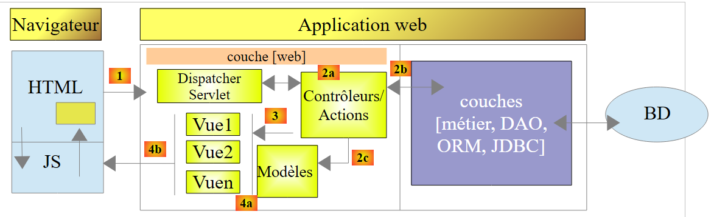
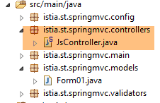
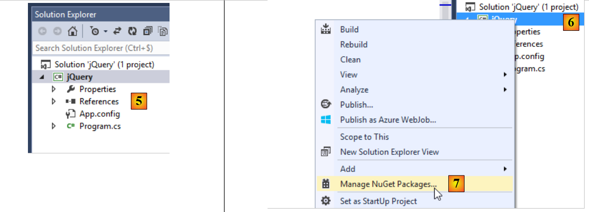
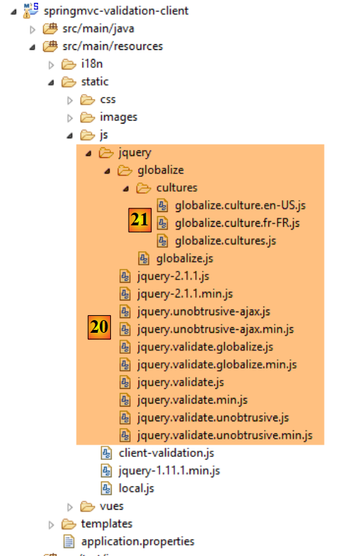
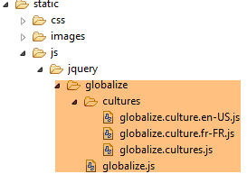
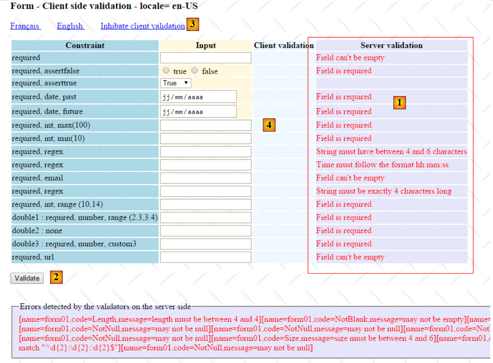
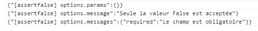
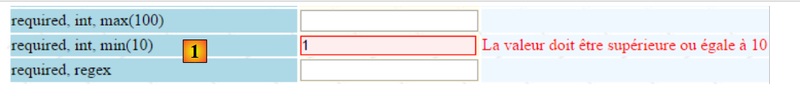
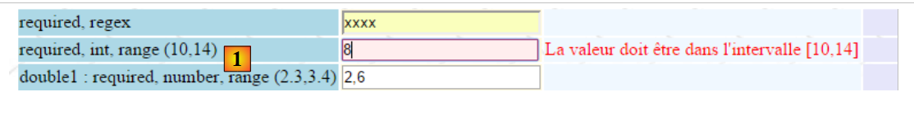

6. Clientseitige JavaScript-Validierung
Im vorigen Kapitel haben wir uns mit der serverseitigen Validierung befasst. Kehren wir nun zur Architektur einer Spring-MVC-Anwendung zurück:
 |
DB
Bisher enthielten die an den Client gesendeten Seiten kein JavaScript. Wir werden uns nun mit dieser Technologie befassen, die es uns zunächst ermöglicht, clientseitige Validierung durchzuführen. Das Prinzip ist wie folgt:
- JavaScript sendet die Werte an den Webserver;
- und so kann es vor diesem POST die Gültigkeit der Daten prüfen und den POST verhindern, wenn die Daten ungültig sind;
Wir verwenden das Formular, das wir serverseitig validiert haben. Wir bieten nun die Möglichkeit, es sowohl clientseitig als auch serverseitig zu validieren.
Hinweis: Dies ist ein komplexes Thema. Leser, die sich nicht für dieses Thema interessieren, können direkt zu Absatz 7 springen.
6.1. Projektmerkmale
Wir stellen einige Ansichten des Projekts vor, um dessen Funktionen zu veranschaulichen. Die Startseite ist über die URL [http://localhost:8080/js01.html] erreichbar.
 |
Es wurden Validierungen auf beiden Seiten implementiert: auf der Client- und auf der Serverseite. Da die POST-Anfrage nur dann erfolgt, wenn die Werte auf der Clientseite als gültig eingestuft wurden, sind die serverseitigen Validierungen immer erfolgreich. Wir haben daher einen Link bereitgestellt, um die clientseitigen Validierungen zu deaktivieren. In diesem Modus entspricht das Verhalten dem, was wir bereits behandelt haben. Hier ein Beispiel:
123  |
- in [1] die eingegebenen Werte;
- in [2] die Fehlermeldungen zu den Eingaben;
- in [3] eine Zusammenfassung der Fehler mit folgenden Angaben zu jedem einzelnen:
- den Namen des validierten Feldes,
- den Fehlercode,
- die Standardmeldung für diesen Fehlercode;
Aktivieren wir nun die clientseitige Validierung:
 |
- in [1] die eingegebenen Werte. Beachten Sie, dass fehlerhafte Eingaben einen bestimmten Stil aufweisen;
- in [2] die Fehlermeldungen, die mit den falschen Eingaben verbunden sind. Sie sind identisch mit denen, die vom Server generiert werden;
- in [3-4] ist nichts zu sehen, da die POST-Anfrage an den Server nicht erfolgt, solange fehlerhafte Eingaben vorhanden sind;
6.2. Serverseitige Validierung
6.2.1. Konfiguration
Wir beginnen mit der Erstellung eines neuen Maven-Projekts [springmvc-validation-client]:
 |
Wir entwickeln das Projekt wie folgt:
 |
Die Klasse [Config] konfiguriert das Projekt. Sie ist identisch mit der aus den vorherigen Projekten:
package istia.st.springmvc.config;
import java.util.Locale;
import org.springframework.boot.autoconfigure.EnableAutoConfiguration;
import org.springframework.context.MessageSource;
import org.springframework.context.annotation.Bean;
import org.springframework.context.annotation.ComponentScan;
import org.springframework.context.annotation.Configuration;
import org.springframework.context.support.ResourceBundleMessageSource;
import org.springframework.web.servlet.config.annotation.InterceptorRegistry;
import org.springframework.web.servlet.config.annotation.WebMvcConfigurerAdapter;
import org.springframework.web.servlet.i18n.CookieLocaleResolver;
import org.springframework.web.servlet.i18n.LocaleChangeInterceptor;
import org.thymeleaf.spring4.SpringTemplateEngine;
import org.thymeleaf.spring4.templateresolver.SpringResourceTemplateResolver;
@Configuration
@ComponentScan({ "istia.st.springmvc.controllers", "istia.st.springmvc.models" })
@EnableAutoConfiguration
public class Config extends WebMvcConfigurerAdapter {
@Bean
public MessageSource messageSource() {
ResourceBundleMessageSource messageSource = new ResourceBundleMessageSource();
messageSource.setBasename("i18n/messages");
return messageSource;
}
@Bean
public LocaleChangeInterceptor localeChangeInterceptor() {
LocaleChangeInterceptor localeChangeInterceptor = new LocaleChangeInterceptor();
localeChangeInterceptor.setParamName("lang");
return localeChangeInterceptor;
}
@Override
public void addInterceptors(InterceptorRegistry registry) {
registry.addInterceptor(localeChangeInterceptor());
}
@Bean
public CookieLocaleResolver localeResolver() {
CookieLocaleResolver localeResolver = new CookieLocaleResolver();
localeResolver.setCookieName("lang");
localeResolver.setDefaultLocale(new Locale("fr"));
return localeResolver;
}
@Bean
public SpringResourceTemplateResolver templateResolver() {
SpringResourceTemplateResolver templateResolver = new SpringResourceTemplateResolver();
templateResolver.setPrefix("classpath:/templates/");
templateResolver.setSuffix(".xml");
templateResolver.setTemplateMode("HTML5");
templateResolver.setCacheable(true);
templateResolver.setCharacterEncoding("UTF-8");
return templateResolver;
}
@Bean
SpringTemplateEngine templateEngine(SpringResourceTemplateResolver templateResolver) {
SpringTemplateEngine templateEngine = new SpringTemplateEngine();
templateEngine.setTemplateResolver(templateResolver);
return templateEngine;
}
}
Die Klasse [Main] ist die ausführbare Klasse des Projekts:
package istia.st.springmvc.main;
import istia.st.springmvc.config.Config;
import java.util.Arrays;
import org.springframework.boot.SpringApplication;
import org.springframework.context.ApplicationContext;
public class Main {
public static void main(String[] args) {
// launch the application
ApplicationContext context = SpringApplication.run(Config.class, args);
// displays the list of beans found by Spring
System.out.println("Liste des beans Spring");
String[] beanNames = context.getBeanDefinitionNames();
Arrays.sort(beanNames);
for (String beanName : beanNames) {
System.out.println(beanName);
}
}
}
- Zeile 13: Spring Boot wird mit der Konfigurationsdatei [Config] gestartet;
- Zeilen 15–20: In diesem Beispiel zeigen wir, wie man die Liste der von Spring verwalteten Objekte anzeigt. Dies kann nützlich sein, wenn Sie den Eindruck haben, dass Spring eine Ihrer Komponenten nicht verwaltet. Auf diese Weise können Sie dies überprüfen. Außerdem können Sie so die von Spring Boot durchgeführte Autokonfiguration überprüfen. In der Konsole sehen Sie eine Liste, die in etwa wie folgt aussieht:
Wir haben die in der Klasse [Config] definierten Objekte hervorgehoben.
6.2.2. Das Formularmodell
Lassen Sie uns das Projekt weiter erkunden:
 |
Die Klasse [Form01] ist die Klasse, die die übermittelten Werte empfängt. Sie sieht wie folgt aus:
package istia.st.springmvc.models;
import java.util.Date;
import javax.validation.constraints.AssertFalse;
import javax.validation.constraints.AssertTrue;
import javax.validation.constraints.DecimalMax;
import javax.validation.constraints.DecimalMin;
import javax.validation.constraints.Future;
import javax.validation.constraints.Max;
import javax.validation.constraints.Min;
import javax.validation.constraints.NotNull;
import javax.validation.constraints.Past;
import javax.validation.constraints.Pattern;
import javax.validation.constraints.Size;
import org.hibernate.validator.constraints.Email;
import org.hibernate.validator.constraints.Length;
import org.hibernate.validator.constraints.NotBlank;
import org.hibernate.validator.constraints.Range;
import org.hibernate.validator.constraints.URL;
import org.springframework.format.annotation.DateTimeFormat;
public class Form01 {
// posted values
@NotNull
@AssertFalse
private Boolean assertFalse;
@NotNull
@AssertTrue
private Boolean assertTrue;
@NotNull
@Future
@DateTimeFormat(pattern = "yyyy-MM-dd")
private Date dateInFuture;
@NotNull
@Past
@DateTimeFormat(pattern = "yyyy-MM-dd")
private Date dateInPast;
@NotNull
@Max(value = 100)
private Integer intMax100;
@NotNull
@Min(value = 10)
private Integer intMin10;
@NotNull
@NotBlank
private String strNotEmpty;
@NotNull
@Size(min = 4, max = 6)
private String strBetween4and6;
@NotNull
@Pattern(regexp = "^\\d{2}:\\d{2}:\\d{2}$")
private String hhmmss;
@NotNull
@Email
@NotBlank
private String email;
@NotNull
@Length(max = 4, min = 4)
private String str4;
@Range(min = 10, max = 14)
@NotNull
private Integer int1014;
@NotNull
@DecimalMax(value = "3.4")
@DecimalMin(value = "2.3")
private Double double1;
@NotNull
private Double double2;
@NotNull
private Double double3;
@URL
@NotBlank
private String url;
// customer validation
private boolean clientValidation = true;
// local
private String lang;
...
}
Wir sehen Validatoren, die wir bereits kennen. Außerdem werden wir das Konzept der benutzerdefinierten Validierung vorstellen. Dabei handelt es sich um eine Art der Validierung, die nicht von einem vordefinierten Validator abgewickelt werden kann. Hier legen wir fest, dass [double1+double2] im Bereich [10,13] liegen muss.
6.2.3. Der Controller
Der Controller [JsController] sieht wie folgt aus:
 |
package istia.st.springmvc.controllers;
import istia.st.springmvc.models.Form01;
...
@Controller
public class JsController {
@RequestMapping(value = "/js01", method = RequestMethod.GET, produces = "text/html; charset=UTF-8")
public String js01(Form01 formulaire, Locale locale, Model model) {
setModel(formulaire, model, locale, null);
return "vue-01";
}
...
// preparing the view-01 model
private void setModel(Form01 formulaire, Model model, Locale locale, String message) {
...
}
}
- Zeile 9: die Aktion [/js01];
- Zeile 10: Ein Objekt vom Typ [Form01] wird instanziiert und automatisch in das Modell eingefügt, verknüpft mit dem Schlüssel [form01];
- Zeile 10: Die Locale und das Modell werden in die Parameter eingefügt;
- Zeile 11: Mit diesen Informationen wird das Modell vorbereitet;
- Zeile 12: Die Ansicht [vue-01.xml] wird angezeigt;
Die Methode [setModel] lautet wie folgt:
// preparing the view-01 model
private void setModel(Form01 formulaire, Model model, Locale locale, String message) {
// we only manage fr-FR, en-US locales
String language = locale.getLanguage();
String country = null;
if (language.equals("fr")) {
country = "FR";
formulaire.setLang("fr_FR");
}
if (language.equals("en")) {
country = "US";
formulaire.setLang("en_US");
}
model.addAttribute("locale", String.format("%s-%s", language, country));
// any message
if (message != null) {
model.addAttribute("message", message);
}
}
- Der Zweck der Methode [setModel] besteht darin, dem Modell Folgendes hinzuzufügen:
- Informationen zur Ländereinstellung,
- die als letzten Parameter übergebene Nachricht;
- Zeile 14: Wir fügen Informationen zur Ländereinstellung (Sprache, Land) in das Modell ein;
- Zeilen 16–18: Jede als Parameter übergebene Meldung wird in die Locale eingefügt;
- Zeilen 8, 12: Die Locale-Informationen werden ebenfalls im Formular [Form01] gespeichert. JavaScript wird diese Informationen verwenden;
Die im Formular [vue-01.xml] eingegebenen Werte werden an die folgende Aktion [/js02] gesendet:
@RequestMapping(value = "/js02", method = RequestMethod.POST, produces = "text/html; charset=UTF-8")
public String js02(@Valid Form01 formulaire, BindingResult result, RedirectAttributes redirectAttributes, Locale locale, Model model) {
Form01Validator validator = new Form01Validator(10, 13);
validator.validate(formulaire, result);
...
}
- Zeile 2: Die Annotation [@Valid Form01 form] stellt sicher, dass die übermittelten Werte an die Validatoren der Klasse [Form01] übergeben werden. Wir wissen, dass es eine spezifische Validierung [double1+double2] im Bereich [10,13] gibt. Wenn wir Zeile 3 erreichen, wurde diese Validierung noch nicht durchgeführt;
- Zeile 3: Wir erstellen das folgende [Form01Validator]-Objekt:
 |
package istia.st.springmvc.validators;
import istia.st.springmvc.models.Form01;
import org.springframework.validation.Errors;
import org.springframework.validation.Validator;
public class Form01Validator implements Validator {
// validation interval
private double min;
private double max;
// manufacturer
public Form01Validator(double min, double max) {
this.min = min;
this.max = max;
}
@Override
public boolean supports(Class<?> classe) {
return Form01.class.equals(classe);
}
@Override
public void validate(Object form, Errors errors) {
// validated object
Form01 form01 = (Form01) form;
// the value of [double1]
Double double1 = form01.getDouble1();
if (double1 == null) {
return;
}
// the value of [double2]
Double double2 = form01.getDouble2();
if (double2 == null) {
return;
}
// [double1+double2]
double somme = double1 + double2;
// validation
if (somme < min || somme > max) {
errors.rejectValue("double2", "form01.double2", new Double[] { min, max }, null);
}
}
}
- Zeile 8: Um eine bestimmte Validierung zu implementieren, erstellen wir eine Klasse, die die Spring-Schnittstelle [Validator] implementiert. Diese Schnittstelle verfügt über zwei Methoden: [supports] in Zeile 21 und [validate] in Zeile 26;
- Zeilen 21–23: Die Methode [supports] nimmt ein Objekt vom Typ [Class] entgegen. Sie muss true zurückgeben, um anzuzeigen, dass sie diese Klasse unterstützt, andernfalls false;
- Zeile 22: Wir legen fest, dass die Klasse [Form01Validator] nur Objekte vom Typ [Form01] validiert;
- Zeilen 15–18: Erinnern Sie sich daran, dass wir die Einschränkung [double1+double2] innerhalb des Intervalls [10,13] implementieren wollen. Anstatt uns auf dieses Intervall zu beschränken, prüfen wir die Einschränkung [double1+double2] innerhalb des Intervalls [min, max]. Aus diesem Grund haben wir einen Konstruktor mit diesen beiden Parametern;
- Zeile 26: Die Methode [validate] wird mit einer Instanz des zu validierenden Objekts – in diesem Fall einer Instanz von [Form01] – und mit der Sammlung der derzeit bekannten Fehler [Errors errors] aufgerufen. Wenn die von der Methode [validate] durchgeführte Validierung fehlschlägt, muss sie ein neues Element in der Sammlung [Errors errors] erstellen;
- Zeile 43: Die Validierung ist fehlgeschlagen. Wir fügen der Sammlung [Errors errors] ein Element hinzu, indem wir die Methode [Errors.rejectValue] verwenden, deren Parameter wie folgt lauten:
- Parameter 1: in der Regel der Name des Feldes, in dem der Fehler auftritt. Hier haben wir die Felder [double1, double2] geprüft. Wir können entweder eines davon verwenden,
- die zugehörige Fehlermeldung oder genauer gesagt deren Schlüssel in den externen Meldungsdateien verwenden:
[messages_fr.properties]
form01.double2=[double2+double1] doit être dans l''intervalle [{0},{1}]
[messages_en.properties]
form01.double2=[double2+double1] must be in [{0},{1}
Hier haben wir Meldungen, die durch {0} und {1} parametrisiert sind. Daher müssen für diese Meldung zwei Werte angegeben werden. Genau das bewirkt der dritte Parameter der Methode [Errors.rejectValue].
- Der vierte Parameter ist eine Standardmeldung für den Fehler;
Kehren wir zur Aktion [/js02] zurück:
@RequestMapping(value = "/js02", method = RequestMethod.POST, produces = "text/html; charset=UTF-8")
public String js02(@Valid Form01 formulaire, BindingResult result, RedirectAttributes redirectAttributes, Locale locale, Model model) {
Form01Validator validator = new Form01Validator(10, 13);
validator.validate(formulaire, result);
if (result.hasErrors()) {
StringBuffer buffer = new StringBuffer();
for (ObjectError error : result.getAllErrors()) {
buffer.append(String.format("[name=%s,code=%s,message=%s]", error.getObjectName(), error.getCode(), error.getDefaultMessage()));
}
setModel(formulaire, model, locale, buffer.toString());
return "vue-01";
} else {
redirectAttributes.addFlashAttribute("form01", formulaire);
return "redirect:/js01.html";
}
}
- Zeile 4: Der Validator [Form01Validator] wird mit den folgenden Parametern ausgeführt:
- Parameter 1: das zu validierende Objekt,
- Parameter 2: die Fehlerliste für dieses Objekt. Dies ist das Objekt [BindingResult result], das als Parameter an die Aktion übergeben wird. Wenn die Validierung fehlschlägt, enthält dieses Objekt einen weiteren Fehler;
- Zeile 5: Wir prüfen, ob Validierungsfehler vorliegen;
- Zeilen 7–10: Wir durchlaufen die Fehlerliste, um für jeden Fehler Folgendes zu speichern:
- den Namen des validierten Objekts,
- seinen Fehlercode,
- seine Standardfehlermeldung;
- Zeile 10: Anhand dieser Informationen erstellen wir die Ansichtsvorlage [vue-01.xml]. Diesmal gibt es eine Meldung – die verkettete und gekürzte Version der verschiedenen Fehlermeldungen;
- Zeilen 12–15: Wenn alle übermittelten Werte gültig sind, leiten wir den Client zur Aktion [/js01] weiter, indem wir die übermittelten Werte als Flash-Attribute setzen;
6.2.4. Die Ansicht
Die Ansicht [view-01.xml] ist komplex. Wir werden nur einen kleinen Teil davon vorstellen:
<!DOCTYPE HTML>
<html xmlns:th="http://www.thymeleaf.org">
<head>
<title>Spring 4 MVC</title>
<meta http-equiv="Content-Type" content="text/html; charset=UTF-8" />
<link rel="stylesheet" href="/css/form01.css" />
<script type="text/javascript" src="/js/jquery/jquery-1.10.2.min.js"></script>
...
</head>
<body>
<!-- title -->
<h3>
<span th:text="#{form01.title}"></span>
<span th:text="${locale}"></span>
</h3>
<!-- menu -->
<p>
...
</p>
<!-- form -->
<form action="/someURL" th:action="@{/js02.html}" method="post" th:object="${form01}" name="form" id="form">
<table>
<thead>
<tr>
<th class="col1" th:text="#{form01.col1}">Contrainte</th>
<th class="col2" th:text="#{form01.col2}">Saisie</th>
<th class="col3" th:text="#{form01.col3}">Validation client</th>
<th class="col4" th:text="#{form01.col4}">Validation serveur</th>
</tr>
</thead>
<tbody>
<!-- required -->
<tr>
<td class="col1">required</td>
<td class="col2">
<input type="text" th:field="*{strNotEmpty}" data-val="true" th:attr="data-val-required=#{NotNull}" />
</td>
<td class="col3">
<span class="field-validation-valid" data-valmsg-for="strNotEmpty" data-valmsg-replace="true"></span>
</td>
<td class="col4">
<span th:if="${#fields.hasErrors('strNotEmpty')}" th:errors="*{strNotEmpty}" class="error">Donnée erronée</span>
</td>
</tr>
...
</tbody>
</table>
<p>
<!-- validation button -->
<input type="submit" th:value="#{form01.valider}" value="Valider" onclick="javascript:postForm01()" />
</p>
</form>
<!-- server-side validator message -->
<br/>
<fieldset class="fieldset">
<legend>
<span th:text="#{server.error.message}"></span>
</legend>
<span th:text="${message}" class="error"></span>
</fieldset>
</body>
</html>
Diese Seite verwendet eine Reihe von Meldungen, die in den externen Meldungsdateien zu finden sind:
[messages_fr.properties]
form01.title=Formulaire - Validations côté client - locale=
form01.col1=Contrainte
form01.col2=Saisie
form01.col3=Validation client
form01.col4=Validation serveur
form01.valider=Valider
server.error.message=Erreurs détectées par les validateurs côté serveur
[messages_en.properties]
form01.title=Form - Client side validation - locale=
form01.col1=Constraint
form01.col2=Input
form01.col3=Client validation
form01.col4=Server validation
form01.valider=Validate
server.error.message=Errors detected by the validators on the server side
Kehren wir zum Seitencode zurück:
- Zeile 8: eine große Anzahl von JavaScript-Bibliotheksimporten, die wir hier ignorieren können;
- Zeile 14: Zeigt die vom Server in der Vorlage festgelegte Ländereinstellung an;
- Zeile 59: Zeigt die vom Server in der Vorlage festgelegte Meldung an;
Der Code in den Zeilen 33–44 ist neu. Sehen wir uns diesen einmal an:
<!-- required -->
<tr>
<td class="col1">required</td>
<td class="col2">
<input type="text" th:field="*{strNotEmpty}" data-val="true" th:attr="data-val-required=#{NotNull}" />
</td>
<td class="col3">
<span class="field-validation-valid" data-valmsg-for="strNotEmpty" data-valmsg-replace="true"></span>
</td>
<td class="col4">
<span th:if="${#fields.hasErrors('strNotEmpty')}" th:errors="*{strNotEmpty}" class="error">Donnée erronée</span>
</td>
</tr>
Der einfachste Ansatz wäre wohl, sich den von diesem Thymeleaf-Segment generierten HTML-Code anzusehen:
<!-- required -->
<tr>
<td class="col1">required</td>
<td class="col2">
<input type="text" data-val="true" data-val-required="Le champ est obligatoire" id="strNotEmpty" name="strNotEmpty" value="" />
</td>
<td class="col3">
<span class="field-validation-valid" data-valmsg-for="strNotEmpty" data-valmsg-replace="true"></span>
</td>
<td class="col4">
</td>
</tr>
Wir werden eine clientseitige Validierungsbibliothek namens [jquery.validate] verwenden. Alle [data-x]-Attribute dienen dieser Bibliothek. Wenn die clientseitige Validierung deaktiviert ist, werden diese Attribute nicht verwendet. Daher ist es vorerst nicht notwendig, sie zu verstehen. Wir können uns einfach auf die folgende Thymeleaf-Zeile konzentrieren:
<input type="text" th:field="*{strNotEmpty}" data-val="true" th:attr="data-val-required=#{NotNull}" />
die die folgende HTML-Zeile generiert:
<input type="text" data-val="true" data-val-required="Le champ est obligatoire" id="strNotEmpty" name="strNotEmpty" value="" />
Wie oben erwähnt, gibt es ein Problem bei der Generierung des Attributs [data-val-required="Dieses Feld ist erforderlich"]. Dies liegt daran, dass der mit dem Attribut verknüpfte Wert aus externen Meldungsdateien stammt. Wir sind daher gezwungen, einen Thymeleaf-Ausdruck zu verwenden, um ihn abzurufen. Der Ausdruck lautet wie folgt: [th:attr="data-val-required=#{NotNull}"]. Dieser Ausdruck wird ausgewertet und sein Wert unverändert in den generierten HTML-Tag eingefügt. Er heißt [th:attr], da er zur Generierung von Attributen verwendet wird, die in Thymeleaf nicht vordefiniert sind. Wir sind auf vordefinierte Attribute wie [th:text, th:value, th:class, ...] gestoßen, aber es gibt kein Attribut [th:data-val-required].
6.2.5. Das Stylesheet
Oben sehen wir CSS-Klassen wie [class="field-validation-valid"]. Einige dieser Klassen werden von der JavaScript-Validierungsbibliothek verwendet. Sie sind in der folgenden Datei [form01.css] definiert:
 |
@CHARSET "UTF-8";
/*styles perso*/
body {
background-image: url("/images/standard.jpg");
}
.col1 {
background: lightblue;
}
.col2 {
background: Cornsilk;
}
.col3 {
background: AliceBlue;
}
.col4 {
background: Lavender;
}
.error {
color: red;
}
.fieldset{
background: Lavender;
}
/* Styles for validation helpers
-----------------------------------------------------------*/
.field-validation-error {
color: #f00;
}
.field-validation-valid {
display: none;
}
.input-validation-error {
border: 1px solid #f00;
background-color: #fee;
}
.validation-summary-errors {
font-weight: bold;
color: #f00;
}
.validation-summary-valid {
display: none;
}
6.3. Clientseitige Validierung
6.3.1. Grundlagen von jQuery und JavaScript
Die clientseitige Validierung erfolgt mithilfe von JavaScript. Wir werden das jQuery-Framework verwenden, das viele Funktionen bereitstellt, die die JavaScript-Entwicklung vereinfachen. Wir werden die Grundlagen von jQuery behandeln, die zum Verständnis der Skripte in diesem und den folgenden Kapiteln erforderlich sind.
Wir erstellen eine statische HTML-Datei [JQuery-01.html] und legen sie in einem Ordner [static / views] ab:
 |
Diese Datei enthält folgenden Inhalt:
<!DOCTYPE html>
<html xmlns="http://www.w3.org/1999/xhtml">
<head>
<meta http-equiv="Content-Type" content="text/html; charset=utf-8" />
<title>JQuery-01</title>
<script type="text/javascript" src="/js/jquery-1.11.1.min.js"></script>
</head>
<body>
<h3>Rudiments de JQuery</h3>
<div id="element1">
Elément 1
</div>
</body>
</html>
- Zeile 6: jQuery wird importiert;
- Zeilen 10–12: ein Seitenelement mit der ID [element1]. Wir werden mit diesem Element arbeiten.
Wir müssen die Datei [jquery-1.11.1.min.js] herunterladen. Die neueste Version von jQuery finden Sie unter der URL [http://jquery.com/download/]:

Wir werden die heruntergeladene Datei im Ordner [static / js] ablegen:
 |
Sobald das erledigt ist, öffnen Sie die statische Ansicht [jQuery-01.html] in Chrome [1-2]:
 |
Drücke in Google Chrome [Strg-Umschalt-I], um die Entwicklertools zu öffnen [3]. Über die Registerkarte [Konsole] [4] kannst du JavaScript-Code ausführen. Nachfolgend findest du JavaScript-Befehle, die du eingeben kannst, sowie Erläuterungen zu ihrer Funktion.
JS | Ergebnis |
|
: gibt die Sammlung aller Elemente mit der ID [element1] zurück, also normalerweise eine Sammlung von 0 oder 1 Element, da es auf einer HTML-Seite keine zwei identischen IDs geben kann. |  |
|
: setzt den Text [blabla] für alle Elemente in der Sammlung. Dadurch ändert sich der auf der Seite angezeigte Inhalt |  |
|
blendet die Elemente in der Sammlung aus. Der Text [blabla] wird nicht mehr angezeigt. |  |
|
: zeigt die Sammlung wieder an. So können wir sehen, dass das Element mit der ID [element1] das CSS-Attribut style='display: none;' hat, wodurch das Element ausgeblendet wird. | |
|
: zeigt die Elemente der Sammlung an. Der Text [blabla] erscheint wieder. Das CSS-Attribut style='display: block;' ist für diese Anzeige verantwortlich. |  |
|
: Setzt ein Attribut für alle Elemente in der Sammlung. Das Attribut lautet hier [style] und sein Wert ist [color: red]. Der Text [blabla] wird rot. |  |
 | |
 |
Beachten Sie, dass sich die URL des Browsers während all dieser Vorgänge nicht geändert hat. Es fand keine Kommunikation mit dem Webserver statt. Alles geschieht innerhalb des Browsers. Sehen wir uns nun den Quellcode der Seite an:
<!DOCTYPE html>
<html xmlns="http://www.w3.org/1999/xhtml">
<head>
<meta http-equiv="Content-Type" content="text/html; charset=utf-8" />
<title>JQuery-01</title>
<script type="text/javascript" src="/js/jquery-1.11.1.min.js"></script>
</head>
<body>
<h3>Rudiments de JQuery</h3>
<div id="element1">
Elément 1
</div>
</body>
</html>
Dies ist der Originaltext. Er spiegelt nicht die Änderungen wider, die in den Zeilen 10–12 am Element vorgenommen wurden. Es ist wichtig, dies beim Debuggen von JavaScript zu beachten. In solchen Fällen ist es oft nicht notwendig, den Quellcode der angezeigten Seite einzusehen.
Wir wissen nun genug, um die folgenden JavaScript-Skripte zu verstehen.
6.3.2. JS-Validierungsbibliotheken
Wir werden Bibliotheken aus dem jQuery-Ökosystem verwenden. Eine Reihe von Projekten dreht sich um jQuery, woraus wiederum Bibliotheken entstehen. Wir werden die Validierungsbibliothek [jquery.validate.unobstrusive] verwenden, die von Microsoft erstellt und der jQuery Foundation gespendet wurde. Wir werden sie im Folgenden als MS-Validierungsbibliothek oder, einfacher gesagt, als MS-Bibliothek bezeichnen. Um sie zu erhalten, benötigen Sie eine Microsoft Visual Studio-Umgebung. Ich kenne keine andere Möglichkeit, sie zu erhalten. Sie können eine kostenlose Version wie [Visual Studio Community] [http://www.visualstudio.com/en-us/news/vs2013-community-vs.aspx] (Dez. 2014) verwenden. Leser, die die folgenden Schritte nicht nachvollziehen möchten, können diese Bibliothek und die von ihr benötigten Bibliotheken aus den Beispielen auf der Website dieses Dokuments herunterladen.
Erstellen Sie ein Konsolenprojekt mit Visual Studio [1-4]:
|


 |
- in [5], dem Konsolenprojekt;
- in [6-7]: Wir werden dem Projekt [NuGet]-Pakete hinzufügen. [NuGet] ist eine Visual Studio-Funktion, mit der Sie Bibliotheken in Form von DLLs sowie JavaScript-Bibliotheken herunterladen können.
 |
- Suchen Sie in [9-10] nach dem Stichwort [jQuery];
- Laden Sie in [11–13] die für die clientseitige Validierung erforderlichen JavaScript-Bibliotheken in der angegebenen Reihenfolge herunter;
- Laden Sie in [14] auch die Bibliothek [Microsoft jQuery Unobtrusive Ajax] herunter, die wir in Kürze verwenden werden;
 |
- Suchen Sie in [15-16] nach Paketen mit dem Stichwort [globalize];
- in [17] die Bibliothek [jQuery.Validation.Globalize] herunterladen;
 |
Durch diese verschiedenen Downloads wurden eine Reihe von JavaScript-Bibliotheken im Ordner [Scripts] des Projekts [18] installiert. Nicht alle davon sind nützlich. Jede Datei ist in zwei Versionen verfügbar:
- [js]: die lesbare Version der Bibliothek;
- [min.js]: die unlesbare, sogenannte „minifizierte“ Version der Bibliothek. Sie ist nicht wirklich unlesbar – es handelt sich um Text –, aber sie ist nicht verständlich. Dies ist die Version, die in der Produktion verwendet werden sollte, da diese Datei kleiner ist als die entsprechende [js]-Version und somit die Kommunikationsgeschwindigkeit zwischen Client und Server verbessert;
Die [min.map]-Versionen sind nicht unbedingt erforderlich. Im Ordner [cultures] können Sie nur die von der Anwendung verwalteten Kulturen behalten.
Kopieren Sie diese Dateien mit dem Windows Explorer in den Ordner [static/js/jquery] des Projekts [springmvc-validation-client] und behalten Sie nur die nützlichen Dateien [20]:
 |
Behalten Sie in [21] nur zwei Sprachumgebungen bei:
- [fr-FR]: Französisch (Frankreich);
- [en-US]: US-Englisch;
6.3.3. Importieren von JS-Bibliotheken zur Validierung
Um verwendet werden zu können, müssen diese Bibliotheken von der Ansicht [vue-01.xml] importiert werden:
<head>
<title>Spring 4 MVC</title>
<meta http-equiv="Content-Type" content="text/html; charset=UTF-8" />
<link rel="stylesheet" href="/css/form01.css" />
<script type="text/javascript" src="/js/jquery/jquery-2.1.1.min.js"></script>
<script type="text/javascript" src="/js/jquery/jquery.validate.min.js"></script>
<script type="text/javascript" src="/js/jquery/jquery.validate.unobtrusive.min.js"></script>
<script type="text/javascript" src="/js/jquery/globalize/globalize.js"></script>
<script type="text/javascript" src="/js/jquery/globalize/cultures/globalize.culture.fr-FR.js"></script>
<script type="text/javascript" src="/js/jquery/globalize/cultures/globalize.culture.en-US.js"></script>
<script type="text/javascript" src="/js/client-validation.js"></script>
<script type="text/javascript" src="/js/local.js"></script>
<script th:inline="javascript">
/*<![CDATA[*/
var culture = [[${locale}]];
Globalize.culture(culture);
/*]]>*/
</script>
</head>
- Zeile 11: Import einer JavaScript-Datei, die wir noch nicht besprochen haben;
- Zeilen 13–18: ein von Thymelaf interpretiertes JavaScript-Skript. Es verwaltet die clientseitige Locale;
6.3.4. Clientseitige Lokalisierungsverwaltung
Die clientseitige Lokalisierung wird durch das folgende JavaScript-Skript abgewickelt:
<script th:inline="javascript">
/*<![CDATA[*/
var culture = [[${locale}]];
Globalize.culture(culture);
/*]]>*/
</script>
- Zeilen 3–4: JavaScript-Code, der den Thymeleaf-Ausdruck [[${locale}]] enthält. Beachten Sie die spezifische Syntax dieses Ausdrucks, da er in JavaScript geschrieben ist. Der Ausdruck [[${locale}]] wird durch den Wert des Schlüssels [locale] in der Ansichtsvorlage ersetzt;
Das Ergebnis in der durch diese Zeilen generierten HTML-Ausgabe lautet wie folgt:
<script>
/*<![CDATA[*/
var culture = 'en-US';
Globalize.culture(culture);
/*]]>*/
</script>
Die Zeilen 3–4 legen die clientseitige Kultur fest. Wir unterstützen nur zwei: [fr-FR] und [en-US]. Deshalb haben wir nur zwei Kulturdateien importiert:
<script type="text/javascript" src="/js/jquery/globalize/cultures/globalize.culture.fr-FR.js"></script>
<script type="text/javascript" src="/js/jquery/globalize/cultures/globalize.culture.en-US.js"></script>
Die auf der Client-Seite zu verwendende Kultur wird auf der Server-Seite festgelegt. Kehren wir zum Server-Code zurück:
@RequestMapping(value = "/js01", method = RequestMethod.GET, produces = "text/html; charset=UTF-8")
public String js01(Form01 formulaire, Locale locale, Model model) {
setModel(formulaire, model, locale, null);
return "vue-01";
}
// preparing the view-01 model
private void setModel(Form01 formulaire, Model model, Locale locale, String message) {
// we only manage fr-FR, en-US locales
String language = locale.getLanguage();
String country = null;
if (language.equals("fr")) {
country = "FR";
formulaire.setLang("fr_FR");
}
if (language.equals("en")) {
country = "US";
formulaire.setLang("en_US");
}
model.addAttribute("locale", String.format("%s-%s", language, country));
...
}
- Zeile 20: Die Locale [fr-FR] oder [en-US] wird in der Ansichtsvorlage [vue-01.xml] (Zeile 4) festgelegt. Beachten Sie eine mögliche Komplikation. Während eine französische Locale auf der Client-Seite als [fr-FR] bezeichnet wird, wird sie auf der Server-Seite als [fr_FR] bezeichnet. Aus diesem Grund wird sie in den Zeilen 14 und 18 in dieser Form im Objekt [Form01] gespeichert, das die übermittelten Werte empfängt;
Beachten Sie den folgenden wichtigen Punkt. Das Skript
<script>
/*<![CDATA[*/
var culture = 'en-US';
Globalize.culture(culture);
/*]]>*/
</script>
ändert die Kultur des Clients basierend auf der vom Server gesendeten Locale. Dies internationalisiert nicht die auf der Seite angezeigten Meldungen. Es ändert lediglich, wie bestimmte Informationen, die von der Kultur eines Landes abhängen, interpretiert werden. In der Kultur [fr_FR] ist die reelle Zahl [12.78] gültig, während sie in der Kultur [en-US] ungültig ist. Sie müssen daher [12.78] schreiben. Ebenso ist das Datum [12/01/2014] in der Kultur [fr-FR] gültig, während Sie in der Kultur [en-US] [01/12/2014] schreiben müssen. Die Dateien im Ordner [jquery / globalize] behandeln diese Art von Problemen:
 |
Die Internationalisierung von Fehlermeldungen erfolgt ausschließlich auf der Serverseite. Wir werden sehen, dass die HTML/JS-Seite Fehlermeldungen enthält, die der vom Server verwalteten Locale entsprechen: auf Französisch für die Locale [fr_FR] und auf Englisch für die Locale [en_US].
6.3.5. Die Meldungsdateien
Die Ansicht [vue-01.xml] verwendet die folgenden internationalisierten Meldungen:
 |
[messages_fr.properties]
NotNull=Le champ est obligatoire
NotEmpty=La donnée ne peut être vide
NotBlank=La donnée ne peut être vide
typeMismatch=Format invalide
Future.form01.dateInFuture=La date doit être postérieure ou égale à celle d''aujourd'hui
Past.form01.dateInPast=La date doit être antérieure ou égale à celle d''aujourd'hui
Min.form01.intMin10=La valeur doit être supérieure ou égale à 10
Max.form01.intMax100=La valeur doit être inférieure ou égale à 100
Size.form01.strBetween4and6=La chaîne doit avoir entre 4 et 6 caractères
Length.form01.str4=La chaîne doit avoir quatre caractères exactement
Email.form01.email=Adresse mail invalide
URL.form01.url=URL invalide
Range.form01.int1014=La valeur doit être dans l''intervalle [10,14]
AssertTrue=Seule la valeur True est acceptée
AssertFalse=Seule la valeur False est acceptée
Pattern.form01.hhmmss=Tapez l''heure sous la forme hh:mm:ss
form01.hhmmss.pattern=^\\d{2}:\\d{2}:\\d{2}$
DateInvalide.form01=Date invalide
form01.str4.pattern=^.{4,4}$
form01.int1014.max=14
form01.int1014.min=10
form01.strBetween4and6.pattern=^.{4,6}$
form01.intMax100.value=100
form01.intMin10.value=10
form01.double1.min=2.3
form01.double1.max=3.4
Range.form01.double1=La valeur doit être dans l'intervalle [2,3-3,4]
form01.title=Formulaire - Validations côté client - locale=
form01.col1=Contrainte
form01.col2=Saisie
form01.col3=Validation client
form01.col4=Validation serveur
form01.valider=Valider
form01.double2=[double2+double1] doit être dans l''intervalle [{0},{1}]
form01.double3=[double3+double1] doit être dans l''intervalle [{0},{1}]
locale.fr=Français
locale.en=English
client.validation.true=Activer la validation client
client.validation.false=Inhiber la validation client
DecimalMin.form01.double1=Le nombre doit être supérieur ou égal à 2,3
DecimalMax.form01.double1=Le nombre doit être inférieur ou égal à 3,4
server.error.message=Erreurs détectées par les validateurs côté serveur
[messages_en.properties]
NotNull=Field is required
NotEmpty=Field can''t be empty
NotBlank=Field can''t be empty
typeMismatch=Invalid format
Future.form01.dateInFuture=Date must be greater or equal to today''s date
Past.form01.dateInPast=Date must be lower or equal today''s date
Min.form01.intMin10=Value must be higher or equal to 10
Max.form01.intMax100=Value must be lower or equal to 100
Size.form01.strBetween4and6=String must have between 4 and 6 characters
Length.form01.str4=String must be exactly 4 characters long
Email.form01.email=Invalid mail address
URL.form01.url=Invalid URL
Range.form01.int1014=Value must be in [10,14]
AssertTrue=Only value True is allowed
AssertFalse=Only value False is allowed
Pattern.form01.hhmmss=Time must follow the format hh:mm:ss
form01.hhmmss.pattern=^\\d{2}:\\d{2}:\\d{2}$
DateInvalide.form01=Invalid Date
form01.str4.pattern=^.{4,4}$
form01.int1014.max=14
form01.int1014.min=10
form01.strBetween4and6.pattern=^.{4,6}$
form01.intMax100.value=100
form01.intMin10.value=10
form01.double1.min=2.3
form01.double1.max=3.4
Range.form01.double1=Value must be in [2.3,3.4]
form01.title=Form - Client side validation - locale=
form01.col1=Constraint
form01.col2=Input
form01.col3=Client validation
form01.col4=Server validation
form01.valider=Validate
form01.double2=[double2+double1] must be in [{0},{1}]
form01.double3=[double3+double1] must be in [{0},{1}]
locale.fr=Français
locale.en=English
client.validation.true=Activate client validation
client.validation.false=Inhibate client validation
DecimalMin.form01.double1=Value must be greater or equal to 2.3
DecimalMax.form01.double1=Value must be lower or equal to 3.4
server.error.message=Errors detected by the validators on the server side
Die Datei [messages.properties] ist eine Kopie der englischen Meldungsdatei. Letztendlich werden für alle anderen Sprachumgebungen als [fr] englische Meldungen verwendet. Beachten Sie, dass die Datei [messages_fr.properties] für alle [fr_XX]-Sprachumgebungen verwendet wird, wie z. B. [fr_CA] oder [fr_FR].
Die Ansicht [vue-01.xml] verwendet die Schlüssel aus diesen Meldungen. Wenn Sie den diesen Schlüsseln zugeordneten Wert erfahren möchten, finden Sie ihn in diesem Abschnitt.
6.3.6. Ändern der Locale
Die Ansicht [vue-01.xml] enthält vier Links:
<body>
<!-- title -->
<h3>
<span th:text="#{form01.title}"></span>
<span th:text="${locale}"></span>
</h3>
<!-- menu -->
<p>
<a id="locale_fr" href="javascript:setLocale('fr_FR')">
<span th:text="#{locale.fr}"></span>
</a>
<a id="locale_en" href="javascript:setLocale('en_US')">
<span style="margin-left:30px" th:text="#{locale.en}"></span>
</a>
<a id="clientValidationTrue" href="javascript:setClientValidation(true)">
<span style="margin-left:30px" th:text="#{client.validation.true}"></span>
</a>
<a id="clientValidationFalse" href="javascript:setClientValidation(false)">
<span style="margin-left:30px" th:text="#{client.validation.false}"></span>
</a>
</p>
<!-- form -->
<form action="/someURL" th:action="@{/js02.html}" method="post" th:object="${form01}" name="form" id="form">
...
von denen einige unten aufgeführt sind [1]:
 |
Sehen wir uns die beiden Links an, über die Sie die Spracheinstellung auf Französisch oder Englisch ändern können:
<a id="locale_fr" href="javascript:setLocale('fr_FR')">
<span th:text="#{locale.fr}"></span>
</a>
<a id="locale_en" href="javascript:setLocale('en_US')">
<span style="margin-left:30px" th:text="#{locale.en}"></span>
</a>
Ein Klick auf diese Links löst die Ausführung eines JavaScript-Skripts aus, das sich in der Datei [local.js] [2] befindet. In beiden Fällen wird eine JavaScript-Funktion [setLocale] aufgerufen:
// local
function setLocale(locale) {
// update the locale
lang.val(locale);
// we submit the form - this doesn't trigger the client validators - that's why we haven't inhibited client-side validation
document.form.submit();
}
Um Zeile 4 zu verstehen, sind einige Hintergrundinformationen erforderlich. Die Ansicht [vue-01.xml] enthält ein verstecktes Feld namens [lang]:
<input type="hidden" th:field="*{lang}" th:value="*{lang}" value="true" />
was einem [lang]-Feld in [Form01] entspricht:
// locale
private String lang;
Versteckte Felder sind nützlich, wenn Sie die übermittelten Werte ergänzen möchten. Mit JavaScript können Sie ihnen einen Wert zuweisen, und dieser Wert wird wie eine normale Benutzereingabe übermittelt. Der von Thymeleaf generierte HTML-Code lautet wie folgt:
<input type="hidden" value="en_US" id="lang" name="lang" />
Der Wert des Parameters [value] entspricht dem Wert des Feldes [Form01.lang] zum Zeitpunkt der HTML-Generierung. Wichtig ist dabei die JavaScript-Kennung des Knotens [id="lang"]. Diese Kennung wird von der folgenden []-Funktion verwendet:
// global variables
var lang;
// document ready
$(document).ready(function() {
// global references
lang = $("#lang");
});
// local
function setLocale(locale) {
// update the locale
lang.val(locale);
// the form is submitted - for some reason this does not trigger the client's validators
// that's why we didn't inhibit validation
document.form.submit();
}
- Zeilen 5–8: Die JavaScript-Funktion [$(document).ready(f)] ist eine Funktion, die ausgeführt wird, sobald der Browser das gesamte vom Server gesendete Dokument geladen hat. Ihr Parameter ist eine Funktion. Wir verwenden die JavaScript-Funktion [$(document).ready(f)], um die JavaScript-Umgebung des geladenen Dokuments zu initialisieren;
- Zeile 7: Der Ausdruck [$("#lang")] ist ein jQuery-Ausdruck. Sein Wert ist ein Verweis auf den DOM-Knoten mit dem Attribut [id='lang'];
- Zeile 2: Variablen, die außerhalb einer Funktion deklariert werden, sind für alle Funktionen global gültig. Das bedeutet hier, dass die in [$(document).ready()] initialisierte Variable [lang] auch in der Funktion [setLocale] in Zeile 11 verfügbar ist;
- Zeile 13: Ändert das Attribut [value] des durch [lang] identifizierten Knotens. Wenn lang [xx_XX] ist, lautet der HTML-Tag für den Knoten:
<input type="hidden" value="xx_XX" id="lang" name="lang" />
Mit JavaScript können Sie die Werte von DOM-Elementen (Document Object Model) ändern.
- Zeile 16: [document] bezieht sich auf das DOM. [document.form] bezieht sich auf das erste Formular, das in diesem Dokument gefunden wird. Ein HTML-Dokument kann mehrere <form>-Tags und somit mehrere Formulare enthalten. Hier haben wir nur eines. [document.form.submit] sendet dieses Formular ab, als hätte der Benutzer auf eine Schaltfläche mit dem Attribut [type='submit'] geklickt. An welche Aktion werden die Formularwerte übermittelt? Um das herauszufinden, schau dir das [form]-Tag in [vue-01.xml] an:
<!-- form -->
<form action="/someURL" th:action="@{/js02.html}" method="post" th:object="${form01}" name="form" id="form">
Die Aktion, die die übermittelten Werte empfängt, ist diejenige, die durch das Attribut [th:action] festgelegt ist. Dies ist also die Aktion [/js02.html]. Beachten Sie, dass in diesem Namen die Endung [.html] entfernt wird und letztendlich die Aktion [/js02] ausgeführt wird. Wichtig zu verstehen ist, dass der neue Wert [xx_XX] des Knotens [lang] in der Form [lang=xx_XX] gesendet wird. Wir haben unsere Anwendung jedoch so konfiguriert, dass sie den Parameter [lang] abfängt und als Änderung der Sprachumgebung interpretiert. Auf der Serverseite wird die Sprachumgebung also zu [xx_XX]. Sehen wir uns die Aktion [/js02] an, die ausgeführt wird:
@RequestMapping(value = "/js02", method = RequestMethod.POST, produces = "text/html; charset=UTF-8")
public String js02(@Valid Form01 formulaire, BindingResult result, RedirectAttributes redirectAttributes, Locale locale, Model model) {
Form01Validator validator = new Form01Validator(10, 13);
validator.validate(formulaire, result);
if (result.hasErrors()) {
StringBuffer buffer = new StringBuffer();
for (ObjectError error : result.getAllErrors()) {
buffer.append(String.format("[name=%s,code=%s,message=%s]", error.getObjectName(), error.getCode(),
error.getDefaultMessage()));
}
setModel(formulaire, model, locale, buffer.toString());
return "vue-01";
} else {
redirectAttributes.addFlashAttribute("form01", formulaire);
return "redirect:/js01.html";
}
}
// preparing the view-01 model
private void setModel(Form01 formulaire, Model model, Locale locale, String message) {
// we only manage fr-FR, en-US locales
String language = locale.getLanguage();
String country = null;
if (language.equals("fr")) {
country = "FR";
formulaire.setLang("fr_FR");
}
if (language.equals("en")) {
country = "US";
formulaire.setLang("en_US");
}
model.addAttribute("locale", String.format("%s-%s", language, country));
...
}
- Zeile 2: Die Aktion [/js02] erhält die neue Locale [xx_XX], die im Parameter [Locale locale] enthalten ist:
- Zeilen 5–12: Wenn einer der übermittelten Werte ungültig ist, wird die Ansicht [vue-01.xml] mit Fehlermeldungen unter Verwendung der neuen Locale [xx_XX] angezeigt. Zusätzlich setzt Zeile 11 die Variable [locale=xx-XX] im Modell. Auf der Client-Seite wird dieser Wert verwendet, um die clientseitige Locale zu aktualisieren. Wir haben diesen Prozess beschrieben;
- Zeilen 14–15: Sind alle übermittelten Werte gültig, erfolgt eine Weiterleitung zur folgenden Aktion [/js01]:
@RequestMapping(value = "/js01", method = RequestMethod.GET, produces = "text/html; charset=UTF-8")
public String js01(Form01 formulaire, Locale locale, Model model) {
setModel(formulaire, model, locale, null);
return "vue-01";
}
- Zeile 2: Die neue Locale [xx_XX] wird eingefügt;
- Zeile 3: Die Methode [setModel] setzt dann die Locale des Clients auf [xx-XX];
Betrachten wir nun den Einfluss der Locale in der Ansicht [view-01.xml]. Wir haben vorerst nicht die gesamte Ansicht gezeigt, da sie über 300 Zeilen umfasst. Die meisten Zeilen bestehen jedoch aus einer Abfolge, die der folgenden ähnelt:
<!-- required -->
<tr>
<td class="col1">required</td>
<td class="col2">
<input type="text" th:field="*{strNotEmpty}" data-val="true" th:attr="data-val-required=#{NotNull}" />
</td>
<td class="col3">
<span class="field-validation-valid" data-valmsg-for="strNotEmpty" data-valmsg-replace="true"></span>
</td>
<td class="col4">
<span th:if="${#fields.hasErrors('strNotEmpty')}" th:errors="*{strNotEmpty}" class="error">Donnée erronée</span>
</td>
</tr>
Dieser Code zeigt das folgende Fragment an [1]:
 |
Die Fehlermeldung [2] stammt vom Attribut [th:attr="data-val-required=#{NotNull}"] in Zeile 5. [#{NotNull}] ist eine lokalisierte Meldung. Je nach serverseitiger Locale generiert Zeile 5 das Tag:
<input type="text" data-val="true" data-val-required="Field is required" id="strNotEmpty" name="strNotEmpty" />
oder das Tag:
<input type="text" data-val="true" data-val-required="Le champ est obligatoire" id="strNotEmpty" name="strNotEmpty" />
Die [data-x]-Attribute werden von der JavaScript-Validierungsbibliothek verwendet.
Beachten Sie schließlich, dass beide Links zum Wechseln der Sprachumgebung:
- eine POST-Anfrage für die eingegebenen Werte auslösen;
- die Spracheinstellung sowohl auf Server- als auch auf Client-Seite ändern;
- eine HTML-Seite generieren, die Fehlermeldungen für die JavaScript-Validierungsbibliothek enthält, und sicherstellen, dass diese Meldungen in der Sprache der ausgewählten Ländereinstellung vorliegen;
6.3.7. POST-Übertragung der eingegebenen Werte
Betrachten wir die Schaltfläche [Validate], die die in der Ansicht [vue-01.xml] eingegebenen Werte über POST übermittelt. Ihr HTML-Code lautet wie folgt:
<!-- validation button -->
<input type="submit" value="Valider" onclick="javascript:postForm01()" />
Wenn JavaScript im Browser aktiviert ist, löst ein Klick auf die Schaltfläche die Ausführung der Methode [postForm01] aus. Wenn diese Funktion den booleschen Wert [False] zurückgibt, findet die Übermittlung nicht statt. Wenn sie einen anderen Wert zurückgibt, findet sie statt. Diese Funktion befindet sich in der Datei [local.js]:
 |
Sie wird von der Ansicht [vue-01.xml] über die folgende Zeile 6 importiert:
<head>
<title>Spring 4 MVC</title>
<meta http-equiv="Content-Type" content="text/html; charset=UTF-8" />
<link rel="stylesheet" href="/css/form01.css" />
...
<script type="text/javascript" src="/js/local.js"></script>
</head>
In dieser Datei finden wir den folgenden Code:
// global variables
var formulaire;
var clientValidation;
var double1;
var double2;
var double3;
...
$(document).ready(function() {
// global references
formulaire = $("#form");
clientValidation = $("#clientValidation");
double1 = $("#double1");
double2 = $("#double2");
double3 = $("#double3");
...
});
....
// post form
function postForm01() {
...
}
- Zeilen 8–16: Die JavaScript-Funktion [$(document).ready(f)] ist eine Funktion, die ausgeführt wird, sobald der Browser das gesamte vom Server gesendete Dokument geladen hat. Ihr Parameter ist eine Funktion. Wir verwenden die JavaScript-Funktion [$(document).ready(f)], um die JavaScript-Umgebung des geladenen Dokuments zu initialisieren;
- Zeilen 10–14: Um diese Zeilen zu verstehen, müssen Sie sich sowohl den Thymeleaf-Code als auch den generierten HTML-Code ansehen;
Der relevante Thymeleaf-Code lautet wie folgt:
<form action="/someURL" th:action="@{/js02.html}" method="post" th:object="${form01}" name="form" id="form">
...
<input type="text" th:field="*{double1}" th:value="*{double1}" ... />
...
<input type="text" th:field="*{double2}" th:value="*{double2}" />
...
<input type="text" th:field="*{double3}" th:value="*{double3}" ... />
...
<input type="hidden" th:field="*{clientValidation}" th:value="*{clientValidation}" value="true" />
was den folgenden HTML-Code erzeugt:
<form action="/js02.html" method="post" name="form" id="form">
...
<input type="text" id="double1" name="double1" .../>
....
<input type="text" value="" id="double2" name="double2" />
...
<input value="" id="double3" name="double3" .../>
...
<input type="hidden" value="false" id="clientValidation" name="clientValidation" />
Jedes [th:field='x']-Attribut generiert zwei HTML-Attribute: [name='x'] und [id='x']. Das [name]-Attribut ist der Name der übermittelten Werte. Das Vorhandensein der Attribute [name='x'] und [value='y'] für ein HTML-Tag <input type='text'> führt also dazu, dass die Zeichenfolge x=y in den übermittelten Werten name1=val1&name2=val2&... Das Attribut [id='x'] wird von JavaScript verwendet. Es dient dazu, ein Element des DOM (Document Object Model) zu identifizieren. Das geladene HTML-Dokument wird nämlich in einen JavaScript-Baum namens DOM umgewandelt, in dem jeder Knoten durch sein [id]-Attribut identifiziert wird.
Kehren wir zum Code für die Funktion [$(document).ready()] zurück:
// global variables
var formulaire;
var clientValidation;
var double1;
var double2;
var double3;
...
$(document).ready(function() {
// global references
formulaire = $("#form");
clientValidation = $("#clientValidation");
double1 = $("#double1");
double2 = $("#double2");
double3 = $("#double3");
...
});
....
// post form
function postForm01() {
...
}
- Zeile 10: Der Ausdruck [$("#form")] ist ein jQuery-Ausdruck. Sein Wert ist eine Referenz auf den DOM-Knoten mit dem Attribut [id='form'];
- Zeilen 10–14: Wir rufen Verweise auf fünf DOM-Knoten ab;
- Zeilen 2–6: Variablen, die außerhalb einer Funktion deklariert werden, sind für die Funktionen global. Das bedeutet hier, dass die in [$(document).ready()] initialisierten Variablen [form, clientValidation, double1, double2, double3] auch in der Funktion [postForm01] in Zeile 19 verfügbar sind;
Betrachten wir nun die Funktion [postForm01]:
// post formulaire
function postForm01() {
// mode de validation côté client
var validationActive = clientValidation.val() === "true";
if (validationActive) {
// on efface les erreurs du serveur
clearServerErrors();
// validation du formulaire
if (!formulaire.validate().form()) {
// pas de submit
return false;
}
}
// réels au format anglo-saxon
var value1 = double1.val().replace(",", ".");
double1.val(value1);
var value2 = double2.val().replace(",", ".");
double2.val(value2);
var value3 = double3.val().replace(",", ".");
double3.val(value3);
// on laisse le submit se faire
return true;
}
Beachten Sie, dass diese JavaScript-Funktion ausgeführt wird, bevor das Formular abgeschickt wird. Wenn sie [false] zurückgibt (Zeile 11), wird das Formular nicht abgeschickt. Wenn sie etwas anderes zurückgibt (Zeile 22), wird das Formular abgeschickt.
- Der wichtige Code befindet sich in den Zeilen 4–12;
- Zeile 4: Wir rufen den Wert des versteckten Feldes [clientValidation] ab. Dieser Wert ist „true“, wenn die clientseitige Validierung aktiviert sein muss, andernfalls „false“;
- Zeile 6: Im Falle einer clientseitigen Validierung löschen wir alle Server-Fehlermeldungen, die möglicherweise vorhanden sind, weil der Benutzer gerade die Ländereinstellung geändert hat;
- Zeile 9: Beachten Sie, dass die Variable [form] den Knoten des HTML-Tags <form> darstellt, d. h. das Formular. Dieses Formular enthält JavaScript-Validatoren, die wir noch nicht behandelt haben und die in den folgenden Abschnitten besprochen werden. Der Ausdruck [form.validate().form()] erzwingt die Ausführung aller im Formular vorhandenen JavaScript-Validatoren. Sein Wert ist [true], wenn alle geprüften Werte gültig sind, andernfalls [false];
- Zeile 11: Der Wert wird auf [false] gesetzt, wenn mindestens einer der geprüften Werte ungültig ist. Dadurch wird verhindert, dass das Formular an den Server gesendet wird;
- Zeilen 15–20: Die Bezeichner [double1, double2, double3] stehen für die drei reellen Zahlen im Formular. Je nach Locale unterscheidet sich der eingegebene Wert. Bei der Locale [fr-FR] schreiben wir [10,37], bei der Locale [en-US] hingegen [10.37]. Damit ist die Eingabe abgedeckt. Bei der Locale [fr-FR] sieht der für [double1] gesendete Wert wie folgt aus: [double1=10,37]. Sobald er den Server erreicht, wird der Wert [10,37] abgelehnt, da der Server [10.37] erwartet, das Standardformat für reelle Zahlen in Java. Daher ersetzen die Zeilen 15–20 das Komma durch einen Punkt in dem für diese Zahlen eingegebenen Wert;
- Zeile 15: Der Ausdruck [double1.val()] gibt die für den Knoten [double1] eingegebene Zeichenkette zurück. Der Ausdruck [double1.val().replace(",", ".")] ersetzt die Kommas in dieser Zeichenkette durch Punkte. Das Ergebnis ist eine Zeichenkette [value1];
- Zeile 16: Die Anweisung [double1.val(value1)] weist dem Knoten [double1] diesen Wert [value1] zu.
Technisch gesehen gilt: Wenn der Benutzer [10,37] für die reelle Zahl [double1] eingegeben hat, hat der Knoten [double1] nach den vorherigen Anweisungen den Wert [10.37] und der Wert, der gesendet wird, lautet [param1=val1&double1=10.37¶m2=val2], ein Wert, der vom Server akzeptiert wird;
- Zeile 22: Wir setzen den Wert auf [true], damit das [submit] des Formulars ausgeführt wird;
Beachten Sie, dass die JavaScript-Funktion [postForm01]:
- alle JavaScript-Validatoren des Formulars ausführt, wenn die clientseitige Validierung aktiviert ist, und verhindert, dass das Formular an den Server gesendet wird, wenn einer der eingegebenen Werte als ungültig deklariert wurde;
- ermöglicht das Anklicken der Schaltfläche [submit], entweder weil die clientseitige Validierung nicht aktiviert ist oder weil sie aktiviert ist und alle eingegebenen Werte gültig sind;
Damit bleibt die Anweisung in Zeile [3]:
// on efface les erreurs du serveur
clearServerErrors();
Der Zweck der Funktion [clearServerErrors] besteht darin, die Meldungen in Spalte 4 der Ansicht [vue-01.xml] zu löschen:
 |
Im obigen Screenshot haben wir auf den Link [English] geklickt. Wir haben gesehen, dass dies einen POST der eingegebenen Werte ausgelöst hat, ohne die JavaScript-Validatoren zu aktivieren. Nach der Rückgabe des POSTs füllt sich die Spalte [Server Validation] mit etwaigen Fehlermeldungen. Wenn wir nun auf die Schaltfläche [Validate] [2] klicken, während die JavaScript-Validatoren aktiviert sind [3], füllt sich die Spalte [Client Validation] [4] mit Meldungen. Wenn wir nichts unternehmen, bleiben die Meldungen in der Spalte [Server Validation] bestehen, was zu Verwirrung führt, da im Falle von Fehlern, die von den JavaScript-Validatoren erkannt wurden, der Server nicht aufgerufen wird. Um dies zu vermeiden, löschen wir die Spalte [Server Validation] in der Funktion [postForm01]. Die Funktion [clearServerErrors()] übernimmt dies:
function clearServerErrors() {
// delete server error msgs
$(".error").each(function(index) {
$(this).text("");
});
}
Eine Besonderheit von Fehlermeldungen ist, dass sie alle die Klasse [error] haben. Zum Beispiel für die erste Zeile der Tabelle in [vue-01.html]:
<span th:if="${#fields.hasErrors('strNotEmpty')}" th:errors="*{strNotEmpty}" class="error">Donnée erronée</span>
Und dies sind die einzigen Knoten im DOM mit dieser Klasse. Wir verwenden diese Eigenschaft in der Funktion [clearServerErrors]:
function clearServerErrors() {
// delete server error msgs
$(".error").each(function(index) {
$(this).text("");
});
}
- Zeile 3: Der Ausdruck [$(".error")] gibt die Sammlung von DOM-Knoten mit der Klasse [error] zurück;
- Zeile 3: Der Ausdruck [$(".error").each(function(index){f}] führt die Funktion [f] für jeden Knoten in der Sammlung aus. Er erhält einen Parameter [index] – der hier nicht verwendet wird –, der den Index des Knotens in der Sammlung angibt;
- Zeile 4: Der Ausdruck [$(this)] bezieht sich auf den aktuellen Knoten in der Iteration. Dies ist ein HTML-Span-Tag. Der Ausdruck [$(this).text("")] weist dem vom Span-Tag angezeigten Text die leere Zeichenkette zu;
Wir werden nun verschiedene JavaScript-Validatoren untersuchen.
6.3.8. [required]-Validator
Betrachten wir das erste Element des Formulars:
 |
Zeile [1] wird durch die folgende Sequenz in der Ansicht [vue-01.xml] generiert:
<!-- required -->
<tr>
<td class="col1">required</td>
<td class="col2">
<input type="text" th:field="*{strNotEmpty}" data-val="true" th:attr="data-val-required=#{NotNull}" />
</td>
<td class="col3">
<span class="field-validation-valid" data-valmsg-for="strNotEmpty" data-valmsg-replace="true"></span>
</td>
<td class="col4">
<span th:if="${#fields.hasErrors('strNotEmpty')}" th:errors="*{strNotEmpty}" class="error">Donnée erronée</span>
</td>
</tr>
Diese Zeilen beziehen sich auf das Feld [strNotEmpty] im Formular [Form01]:
@NotNull
@NotBlank
private String strNotEmpty;
Die Einschränkungen [1-2] stellen sicher, dass das Feld [strNotEmpty] eine gültige Zeichenfolge [NotNull] sein muss, nicht leer sein darf und nicht ausschließlich aus Leerzeichen bestehen darf [NotBlank]. Wir möchten diese Einschränkung auf der Client-Seite mithilfe von JavaScript nachbilden.
Betrachten wir die Zeilen 5 und 8. Zeile 11 stellt kein Problem dar. Sie zeigt die Fehlermeldung an, die mit dem Feld [strNotEmpty] verknüpft ist. Beginnen wir mit Zeile 5:
<input type="text" th:field="*{strNotEmpty}" data-val="true" th:attr="data-val-required=#{NotNull}" />
Aus diesem Code generiert Thymeleaf das folgende Tag:
<input type="text" data-val="true" data-val-required="Field is required" id="strNotEmpty" name="strNotEmpty" value="x" />
- Das Attribut [data-val='true'] wird von jQuery-Validierungsbibliotheken verwendet. Sein Vorhandensein zeigt an, dass der Wert des Knotens einer Validierung unterliegt;
- Das Attribut [data-val-X='msg'] liefert zwei Informationen. [X] ist der Name des Validators und [msg] ist die Fehlermeldung, die mit einem ungültigen Wert des Knotens verknüpft ist, auf den der Validator angewendet wird. Dies dient lediglich der Information. Es bewirkt nicht, dass die Fehlermeldung angezeigt wird;
- [required] ist ein Validator, der von der Validierungsbibliothek [jquery.validate.unobstrusive] von Microsoft erkannt wird. Es ist nicht erforderlich, ihn zu definieren. Dies wird in Zukunft nicht immer der Fall sein;
- [data-x]-Attribute werden von HTML5 ignoriert. Sie sind nur nützlich, wenn JavaScript vorhanden ist, um sie zu nutzen;
Betrachten wir nun Zeile 8:
<span class="field-validation-valid" data-valmsg-for="strNotEmpty" data-valmsg-replace="true"></span>
Sie dient dazu, die Fehlermeldung des Validators [required] anzuzeigen. Liegt ein Fehler vor, ersetzt die JavaScript-Validierungsbibliothek die HTML-Zeile in der Tabelle dynamisch durch den folgenden Code:
<tr>
<td class="col1">required</td>
<td class="col2">
<input type="text" data-val="true" data-val-required="Le champ est obligatoire" id="strNotEmpty" name="strNotEmpty" value="" aria-required="true" aria-invalid="true" aria-describedby="strNotEmpty-error" class="input-validation-error">
</td>
<td class="col3">
<span class="field-validation-error" data-valmsg-for="strNotEmpty" data-valmsg-replace="true">
<span id="strNotEmpty-error" class="">Le champ est obligatoire</span>
</span>
</td>
<td class="col4">
<span class="error"></span>
</td>
</tr>
</tr>
- Zeile 4: Die Klasse des [strNotEmpty]-Knotens hat sich geändert. Sie lautet nun [input-validation-error], wodurch das ungültige Feld rot eingefärbt wird;
- Zeile 7: Die Klasse des [span]-Elements hat sich geändert. Sie lautet nun [field-validation-error], wodurch der Text des [span]-Elements rot angezeigt wird;
- Zeile 8: Der [span], der zuvor leer war, enthält nun den Text [Dieses Feld ist erforderlich]. Dieser Text stammt aus dem Attribut [data-val-required="Dieses Feld ist erforderlich"] in Zeile 4;
- Zeile 7: Um die Fehlermeldung für den Knoten [strNotEmpty] in Zeile 4 anzuzeigen, verwenden Sie die Attribute [data-valmsg-for="strNotEmpty"] und [data-valmsg-replace="true"] in Zeile 7;
6.3.9. Validator [assertfalse]
 |
Zeile [1] wird durch die folgende Sequenz in der Ansicht [vue-01.xml] generiert:
<!-- required, assertfalse -->
<tr>
<td class="col1">required, assertfalse</td>
<td class="col2">
<input type="radio" th:field="*{assertFalse}" value="true" data-val="true"
th:attr="data-val-required=#{NotNull},data-val-assertfalse=#{AssertFalse}" />
<label th:for="${#ids.prev('assertFalse')}">true</label>
<input type="radio" th:field="*{assertFalse}" value="false" data-val="true"
th:attr="data-val-required=#{NotNull},data-val-assertfalse=#{AssertFalse}" />
<label th:for="${#ids.prev('assertFalse')}">false</label>
</td>
<td class="col3">
<span class="field-validation-valid" data-valmsg-for="assertFalse" data-valmsg-replace="true"></span>
</td>
<td class="col4">
<span th:if="${#fields.hasErrors('assertFalse')}" th:errors="*{assertFalse}" class="error">Donnée erronée</span>
</td>
</tr>
Diese Zeilen beziehen sich auf das Feld [assertFalse] im Formular [Form01]:
@NotNull
@AssertFalse
private Boolean assertFalse;
Wir möchten diese Einschränkung auf der Client-Seite mit JavaScript nachbilden. Die Zeilen 12–17 sind nun Standard:
- Zeilen 12–14: Zeigen Sie im Falle eines Fehlers im Feld [assertFalse] die Meldung an, die im Attribut [data-val-assertfalse] in Zeile 6 oder im Attribut [data-val-required] in derselben Zeile enthalten ist. Beachten Sie, dass diese Meldungen lokalisiert sind, d. h. in der zuvor vom Benutzer ausgewählten Sprache oder auf Französisch, falls keine Auswahl getroffen wurde;
- Zeilen 5–10: Zeigen die Optionsfelder mit JavaScript-Validatoren an, die ausgelöst werden, sobald der Benutzer auf eines davon klickt.
Beide Schaltflächen sind auf die gleiche Weise aufgebaut. Betrachten wir die erste:
<input type="radio" th:field="*{assertFalse}" value="true" data-val="true" th:attr="data-val-required=#{NotNull},data-val-assertfalse=#{AssertFalse}" />
Nach der Verarbeitung durch Thymeleaf sieht diese Zeile wie folgt aus:
<input type="radio" value="true" data-val="true" data-val-required="Le champ est obligatoire" data-val-assertfalse="Seule la valeur False est acceptée" id="assertFalse1" name="assertFalse" />
Wir haben Validatoren [data-val="true"]. Es gibt zwei davon. Ein Validator namens [required] [data-val-required="Dieses Feld ist ein Pflichtfeld"] und ein weiterer namens [assertfalse] [data-val-assertfalse="Es wird nur der Wert False akzeptiert"]. Beachten Sie, dass der Wert des Attributs [data-val-X] die Fehlermeldung für den Validator X ist.
Den Validator [required] kennen wir bereits. Neu ist hier, dass wir mehrere Validatoren an einen einzigen Eingabewert anhängen können. Während der Validator [required] von der MS-Validierungsbibliothek (Microsoft) erkannt wird, ist dies beim Validator [assertFalse] nicht der Fall. Wir werden daher lernen, wie man einen neuen Validator erstellt. Wir werden mehrere davon erstellen, und sie werden in einer Datei namens [client-validation.js] abgelegt:
 |
Diese Datei wird, wie die anderen auch, von der Ansicht [vue-01.xml] importiert (Zeile 6 unten):
<head>
<title>Spring 4 MVC</title>
<meta http-equiv="Content-Type" content="text/html; charset=UTF-8" />
<link rel="stylesheet" href="/css/form01.css" />
...
<script type="text/javascript" src="/js/client-validation.js"></script>
...
</head>
Um den Validator [assertfalse] hinzuzufügen, müssen lediglich die folgenden zwei JavaScript-Funktionen erstellt werden:
// -------------- assertfalse
$.validator.addMethod("assertfalse", function(value, element, param) {
return value === "false";
});
$.validator.unobtrusive.adapters.add("assertfalse", [], function(options) {
options.rules["assertfalse"] = options.params;
options.messages["assertfalse"] = options.message.replace("''", "'");
});
Um ganz ehrlich zu sein, bin ich kein JavaScript-Experte; diese Sprache erscheint mir immer noch ziemlich geheimnisvoll. Die Grundlagen sind einfach, aber die darauf aufbauenden Bibliotheken sind oft sehr komplex. Beim Schreiben des obigen Codes habe ich mich von Code inspirieren lassen, den ich online gefunden habe. Es war der Link [http://jsfiddle.net/LDDrk/], der mir den Weg gewiesen hat. Falls er noch existiert, lade ich die Leser ein, ihn sich anzusehen, da er umfassend ist und ein funktionierendes Beispiel enthält. Er zeigt, wie man einen neuen Validator erstellt, und ermöglichte es mir, alle Validatoren in diesem Kapitel zu erstellen. Kommen wir zurück zum Code:
- Zeilen 2–4: Definieren Sie den neuen Validator. Die Funktion [$.validator.addMethod] nimmt den Namen des Validators als ersten Parameter und eine Funktion, die den Validator definiert, als zweiten Parameter entgegen;
- Zeile 2: Die Funktion hat drei Parameter:
- [value]: der zu validierende Wert. Die Funktion muss [true] zurückgeben, wenn der Wert gültig ist, andernfalls [false];
- [element]: das HTML-Element, zu dem der zu validierende Wert gehört;
- [param]: ein Objekt, das die mit den Parametern eines Validators verbundenen Werte enthält. Dieses Konzept haben wir noch nicht eingeführt. Hier hat der Validator [assertFalse] keine Parameter. Wir können ohne zusätzliche Informationen feststellen, ob der Wert [value] gültig ist. Anders wäre es, wenn wir überprüfen müssten, ob der Wert [value] eine reelle Zahl im Intervall [min, max] ist. In diesem Fall müssten wir [min] und [max] kennen. Diese beiden Werte werden als Parameter des Validators bezeichnet;
- Zeilen 6–9: eine von der MS-Validierungsbibliothek benötigte Funktion. Die Funktion [$.validator.unobtrusive.adapters.add] erwartet als ersten Parameter den Namen des Validators, als zweiten Parameter das Array der Validatorparameter und als dritten Parameter eine Funktion;
- Der Validator [assertFalse] hat keine Parameter. Deshalb ist der zweite Parameter ein leeres Array;
- Die Funktion hat nur einen Parameter, ein [options]-Objekt, das Informationen über das zu validierende Element enthält und für das zwei neue Eigenschaften, [rules] und [messages], definiert werden müssen;
- Zeile 7: Wir definieren die Regeln [rules] für den Validator [assertFalse]. Diese Regeln sind die Parameter des Validators [assertFalse], genau wie die des Parameters [param] in Zeile 2. Diese Parameter befinden sich in [options.params];
- Zeile 8: definiert die Fehlermeldung für den Validator [assertFalse]. Diese befindet sich in [options.message]. Bei den Fehlermeldungen stößt man auf folgendes Problem. In den Meldungsdateien findet man folgende Meldung:
Range.form01.int1014=La valeur doit être dans l''intervalle [10,14]
Das doppelte Apostroph ist für Thymeleaf erforderlich. Es interpretiert es als einfaches Apostroph. Wenn Sie ein einfaches Apostroph verwenden, zeigt Thymeleaf es nicht an. Nun dienen diese Meldungen auch als Fehlermeldungen für die MS-Validierungsbibliothek. JavaScript zeigt jedoch beide Apostrophe an. In Zeile 8 ersetzen wir daher das doppelte Apostroph in der Fehlermeldung durch ein einfaches.
Um besser zu verstehen, was hier geschieht, können wir etwas JavaScript-Logging-Code hinzufügen:
// logs
var logs = {
assertfalse : true
}
// -------------- assertfalse
$.validator.addMethod("assertfalse", function(value, element, param) {
// logs
if (logs.assertfalse) {
console.log(jSON.stringify({
"[assertfalse] value" : value
}));
console.log("[assertfalse] element");
console.log(element);
console.log(jSON.stringify({
"[assertfalse] param" : param
}));
}
// test validity
return value === "false";
});
$.validator.unobtrusive.adapters.add("assertfalse", [], function(options) {
// logs
if (logs.assertfalse) {
console.log(jSON.stringify({
"[assertfalse] options.params" : options.params
}));
console.log(jSON.stringify({
"[assertfalse] options.message" : options.message
}));
console.log(jSON.stringify({
"[assertfalse] options.messages" : options.messages
}));
}
// code
options.rules["assertfalse"] = options.params;
options.messages["assertfalse"] = options.message.replace("''", "'");
});
Dieser Code verwendet die JSON3-Bibliothek [http://bestiejs.github.io/json3/]. Wenn wir die Protokollierung aktivieren (Zeile 3), erhalten wir die folgende Ausgabe in der Konsole:
Beim ersten Laden der Seite erscheinen die folgenden Protokolleinträge:
 |
Die jS-Funktion [$.validator.unobtrusive.adapters.add] wurde ausgeführt. Daraus geht Folgendes hervor:
- [options.params] ist ein leeres Objekt, da der Validator [assertFalse] keine Parameter hat;
- [options.message] ist die Fehlermeldung, die wir für den Validator [assertFalse] im Attribut [data-val-assertFalse] erstellt haben;
- [options.messages] ist ein Objekt, das die anderen Fehlermeldungen für das validierte Element enthält. Hier finden wir die Fehlermeldung, die wir im Attribut [data-val-required] platziert haben;
Geben wir nun einen falschen Wert in das Feld [assertFalse] ein und validieren wir:
Wir erhalten dann die folgenden Protokolleinträge:
 |
Hier sehen wir Folgendes:
- Der zu testende Wert ist [true] (Zeile 118);
- das getestete HTML-Element ist das Optionsfeld mit der ID [assertFalse1] (Zeile 122);
- der Validator [assertFalse] hat keine Parameter (Zeile 123);
Da haben wir es. Was können wir daraus lernen?
Für einen jS X-Validator müssen wir Folgendes definieren:
- im zu validierenden HTML-Tag das Attribut [data-val-X='msg'], das sowohl den XJS-Validator als auch dessen Fehlermeldung definiert;
- zwei JavaScript-Funktionen, die in die Datei [client-validation.js] eingefügt werden:
- [$.validator.addMethod("X", function(value, element, param)],
- [$.validator.unobtrusive.adapters.add("X", [param1, param2], function(options)];
Im weiteren Verlauf werden wir auf dem aufbauen, was für diesen ersten Validator bereits getan wurde, und lediglich die Neuerungen vorstellen.
6.3.10. [asserttrue]-Validator
Dieser Validator entspricht natürlich dem [assertFalse]-Validator.
 |
Zeile [1] wird durch die folgende Sequenz in der Ansicht [vue-01.xml] erzeugt:
<!-- required, asserttrue -->
<tr>
<td class="col1">asserttrue</td>
<td class="col2">
<select th:field="*{assertTrue}" data-val="true" th:attr="data-val-asserttrue=#{AssertTrue}">
<option value="true">True</option>
<option value="false">False</option>
</select>
</td>
<td class="col3">
<span class="field-validation-valid" data-valmsg-for="assertTrue" data-valmsg-replace="true"></span>
</td>
<td class="col4">
<span th:if="${#fields.hasErrors('assertTrue')}" th:errors="*{assertTrue}" class="error">Donnée erronée</span>
</td>
</tr>
Diese Zeilen beziehen sich auf das Feld [assertTrue] im Formular [Form01]:
@NotNull
@AssertTrue
private Boolean assertTrue;
In den Zeilen 1–16 gibt es nichts Neues. Sie verwenden einen [assertTrue]-Validator, der in der Datei [client-validation.js] definiert sein muss:
// -------------- asserttrue
$.validator.addMethod("asserttrue", function(value, element, param) {
return value === "true";
});
$.validator.unobtrusive.adapters.add("asserttrue", [], function(options) {
options.rules["asserttrue"] = options.params;
options.messages["asserttrue"] = options.message.replace("''", "'");
});
6.3.11. Validatoren [date] und [past]
 |
Zeile [1] wird durch die folgende Sequenz in der Ansicht [vue-01.xml] generiert:
<!-- required, date, past -->
<tr>
<td class="col1">required, date, past</td>
<td class="col2">
<input type="date" th:field="*{dateInPast}" th:value="*{dateInPast}" data-val="true"
th:attr="data-val-required=#{NotNull},data-val-date=#{DateInvalide.form01},data-val-past=#{Past.form01.dateInPast}" />
</td>
<td class="col3">
<span class="field-validation-valid" data-valmsg-for="dateInPast" data-valmsg-replace="true"></span>
</td>
<td class="col4">
<span th:if="${#fields.hasErrors('dateInPast')}" th:errors="*{dateInPast}" class="error">Donnée erronée</span>
</td>
</tr>
Diese Zeilen beziehen sich auf das Feld [dateInPast] im Formular [Form01]:
@NotNull
@Past
@DateTimeFormat(pattern = "yyyy-MM-dd")
private Date dateInPast;
Die Zeile für die Datumsvalidatoren lautet wie folgt:
<input type="date" th:field="*{dateInPast}" th:value="*{dateInPast}" data-val="true" th:attr="data-val-required=#{NotNull},data-val-date=#{DateInvalide.form01},data-val-past=#{Past.form01.dateInPast}" />
Es gibt drei Validatoren [data-val-X]: required, date und past. Wir müssen die mit diesen beiden neuen Validatoren verbundenen Funktionen in [client-validation.js] definieren:
logs.date = true;
// -------------- date
$.validator.addMethod("date", function(value, element, param) {
// validity
var valide = Globalize.parseDate(value, "yyyy-MM-dd") != null;
// logs
if (logs.date) {
console.log(jSON.stringify({
"[date] value" : value,
"[date] valide" : valide
}));
}
// result
return valide;
});
$.validator.unobtrusive.adapters.add("date", [], function(options) {
options.rules["date"] = options.params;
options.messages["date"] = options.message.replace("''", "'");
});
und
logs.past = true;
// -------------- past
$.validator.addMethod("past", function(value, element, param) {
// validity
var valide = value <= new Date().toISOString().substring(0, 10);
// logs
if (logs.past) {
console.log(jSON.stringify({
"[past] value" : value,
"[past] valide" : valide
}));
}
// result
return valide;
});
$.validator.unobtrusive.adapters.add("past", [], function(options) {
options.rules["past"] = options.params;
options.messages["past"] = options.message.replace("''", "'");
});
Bevor wir den Code erklären, schauen wir uns die Protokolle an, wenn ein Datum eingegeben wird, das nach dem heutigen liegt:
Zunächst ist zu beachten, dass das zu validierende Datum als Zeichenkette im Format [yyyy-mm-dd] eingeht. Dies erklärt die folgenden Zeilen:
var valide = Globalize.parseDate(value, "yyyy-MM-dd") != null;
Die Bibliothek [globalize.js] stellt die oben genannte Funktion [Globalize.parseDate] bereit. Der erste Parameter ist das Datum als Zeichenkette, der zweite das Format. Das Ergebnis ist ein Null-Zeiger, wenn das Datum ungültig ist, andernfalls das resultierende Datum.
Die Gültigkeit des Validators [past] wird durch den folgenden Code überprüft:
var valide = value <= new Date().toISOString().substring(0, 10);
Hier ist die Auswertung des Ausdrucks [new Date().toISOString().substring(0, 10)] in einer Konsole:
 |
Die Zeichenfolge [value] muss in alphabetischer Reihenfolge vor der Zeichenfolge [new Date().toISOString().substring(0, 10)] stehen, um gültig zu sein.
Beachten Sie, dass die verwendete Chrome-Version das Datum im Format [yyyy-mm-dd] angibt. Bei einem Browser, bei dem dies nicht der Fall ist, müsste der Benutzer ausdrücklich angewiesen werden, dieses Eingabeformat zu verwenden.
6.3.12. Validator [zukünftig]
 |
Zeile [1] wird durch die folgende Sequenz in der Ansicht [vue-01.xml] generiert:
<!-- required, date, future -->
<tr>
<td class="col1">required, date, future</td>
<td class="col2">
<input type="date" th:field="*{dateInFuture}" th:value="*{dateInFuture}" data-val="true" th:attr="data-val-required=#{NotNull},data-val-date=#{DateInvalide.form01},data-val-future=#{Future.form01.dateInFuture}" />
</td>
<td class="col3">
<span class="field-validation-valid" data-valmsg-for="dateInFuture" data-valmsg-replace="true"></span>
</td>
<td class="col4">
<span th:if="${#fields.hasErrors('dateInFuture')}" th:errors="*{dateInFuture}" class="error">Donnée erronée</span>
</td>
</tr>
Diese Zeilen beziehen sich auf das Feld [dateInFuture] im Formular [Form01]:
@NotNull
@Future
@DateTimeFormat(pattern = "yyyy-MM-dd")
private Date dateInFuture;
- Zeile 5, ein neuer Validator [data-val-future] erscheint;
Dieser Validator ist natürlich dem Validator [past] sehr ähnlich. Die beiden Funktionen, die zu [client-validation.js] hinzugefügt werden müssen, lauten wie folgt:
// -------------- future
$.validator.addMethod("future", function(value, element, param) {
var now = new Date().toISOString().substring(0, 10);
return value > now;
});
$.validator.unobtrusive.adapters.add("future", [], function(options) {
options.rules["future"] = options.params;
options.messages["future"] = options.message.replace("''", "'");
});
6.3.13. [int]- und [max]-Validatoren
 |
Zeile [1] wird durch die folgende Sequenz in der Ansicht [vue-01.xml] generiert:
<!-- required, int, max(100) -->
<tr>
<td class="col1">required, int, max(100)</td>
<td class="col2">
<input type="text" th:field="*{intMax100}" th:value="*{intMax100}" data-val="true" th:attr="data-val-required=#{NotNull},data-val-int=#{typeMismatch},data-val-max=#{Max.form01.intMax100},data-val-max-value=#{form01.intMax100.value}" />
</td>
<td class="col3">
<span class="field-validation-valid" data-valmsg-for="intMax100" data-valmsg-replace="true"></span>
</td>
<td class="col4">
<span th:if="${#fields.hasErrors('intMax100')}" th:errors="*{intMax100}" class="error">Donnée erronée</span>
</td>
</tr>
Diese Zeilen beziehen sich auf das Feld [intMax100] im Formular [Form01]:
@NotNull
@Max(value = 100)
private Integer intMax100;
Zeile 5 enthält zwei neue Validatoren: [int] und [max]. Letzterer hat einen Parameter: den Maximalwert. Sehen wir uns den von Zeile 5 generierten HTML-Code an:
<!-- required, int, max(100) -->
<tr>
<td class="col1">required, int, max(100)</td>
<td class="col2">
<input type="text" data-val="true" data-val-int="Format invalide" data-val-max-value="100" data-val-required="Le champ est obligatoire" data-val-max="La valeur doit être inférieure ou égale à 100" value="" id="intMax100" name="intMax100" />
</td>
<td class="col3">
<span class="field-validation-valid" data-valmsg-for="intMax100" data-valmsg-replace="true"></span>
</td>
<td class="col4">
</td>
</tr>
Sehen wir uns die Bedeutung der verschiedenen [data-X]-Attribute an:
- [data-val="true"] gibt an, dass Validatoren mit dem HTML-Element verknüpft sind;
- [data-val-required] führt den Validator [required] mit seiner Meldung ein;
- [data-val-int] führt den Validator [int] mit seiner Meldung ein;
- [data-val-max] führt den Validator [max] mit seiner Meldung ein;
- [data-val-max-value="100"] führt einen Parameter namens [value] für den Validator [max] ein. [100] ist der Wert dieses Parameters. Hier begegnen wir zum ersten Mal dem Konzept der Validator-Parameter.
Die Datei [client-validation.js] wird um den folgenden [int]-Validator erweitert:
logs.int = true;
// -------------- int
$.validator.addMethod("int", function(value, element, param) {
// validity
valide = /^\s*[-\+]?\s*\d+\s*$/.test(value);
// logs
if (logs.int) {
console.log(jSON.stringify({
"[int] value" : value,
"[int] valide" : valide,
}));
}
// result
return valide;
});
$.validator.unobtrusive.adapters.add("int", [], function(options) {
options.rules["int"] = options.params;
options.messages["int"] = options.message.replace("''", "'");
});
- Zeile 5: Mit einem regulären Ausdruck wird überprüft, ob die Zeichenkette [value] tatsächlich eine Ganzzahl ist. Diese Ganzzahl kann vorzeichenbehaftet sein;
Hier sind einige Beispiele für Protokolle:
Der [max]-Validator wird wie folgt in [client-validation.js] hinzugefügt
// -------------- max to be used in conjunction with [int] or [number]
logs.max = true;
$.validator.addMethod("max", function(value, element, param) {
// logs
if (logs.max) {
console.log(jSON.stringify({
"[max] value" : value,
"[max] param" : param
}));
}
// validity
var val = Globalize.parseFloat(value);
if (isNaN(val)) {
// logs
if (logs.max) {
console.log(jSON.stringify({
"[max] valide" : true
}));
}
// result
return true;
}
var max = Globalize.parseFloat(param.value);
var valide = val <= max;
// logs
if (logs.max) {
console.log(jSON.stringify({
"[max] valide" : valide
}));
}
// result
return valide;
});
$.validator.unobtrusive.adapters.add("max", [ "value" ], function(options) {
options.rules["max"] = options.params;
options.messages["max"] = options.message.replace("''", "'");
});
Wir werden uns nun mit dem Fall des Parameters [value] des Validators [max] befassen, der durch das Attribut [data-val-max-value="100"] eingeführt wird.
- In Zeile 35 wird der Parameter [value] als zweites Argument an die Funktion [$.validator.unobtrusive.adapters.add] übergeben;
- In Zeile 3 ist das [param]-Objekt nicht mehr leer, sondern enthält {"value":100};
Um den Code in den Zeilen 3–33 zu verstehen, müssen Sie wissen, dass bei mehreren Validatoren auf demselben HTML-Element:
- die Reihenfolge, in der die Validatoren ausgeführt werden, unbekannt ist;
- die Ausführung der Validatoren stoppt, sobald ein Validator das Element für ungültig erklärt. Es ist dann die Fehlermeldung dieses Validators, die mit dem ungültigen Element verknüpft wird;
Sehen wir uns den Code einmal an:
- Zeile 12: Wir prüfen, ob wir eine Zahl haben. Wenn der [int]-Validator vor dem [max]-Validator ausgeführt wurde, ist dies zwangsläufig der Fall, da ein ungültiger Wert die Ausführung der Validatoren stoppt;
- Zeilen 13–22: Wenn wir keine Zahl haben, bedeutet dies, dass der [int]-Validator noch nicht ausgeführt wurde. Wir geben dann an, dass der geprüfte Wert gültig ist, damit der [int]-Validator seine Arbeit verrichten und das Element mit seiner eigenen Fehlermeldung für ungültig erklären kann;
- Zeilen 23–24: Berechnet die Gültigkeit von [value];
Hier sind einige Protokolleinträge:
Eingegebener Wert | Protokolle |
| |
| |
|
6.3.14. [min] Validator
 |
Zeile [1] wird durch die folgende Sequenz in der Ansicht [vue-01.xml] generiert:
<!-- required, int, min(10) -->
<tr>
<td class="col1">required, int, min(10)</td>
<td class="col2">
<input type="text" th:field="*{intMin10}" th:value="*{intMin10}" data-val="true" th:attr="data-val-required=#{NotNull},data-val-int=#{typeMismatch},data-val-min=#{Min.form01.intMin10},data-val-min-value=#{form01.intMin10.value}" />
</td>
<td class="col3">
<span class="field-validation-valid" data-valmsg-for="intMin10" data-valmsg-replace="true"></span>
</td>
<td class="col4">
<span th:if="${#fields.hasErrors('intMin10')}" th:errors="*{intMin10}" class="error">Donnée erronée</span>
</td>
</tr>
Diese Zeilen beziehen sich auf das Feld [intMin10] im Formular [Form01]:
@NotNull
@Min(value = 10)
private Integer intMin10;
In Zeile 5 wird ein neuer Validator [min] [data-val-int=#{typeMismatch}] mit einem Parameter [value] [data-val-min-value=#{form01.intMin10.value}"] eingeführt. Dies ähnelt dem Validator [max]. Fügen Sie den folgenden Code zu [client-validation.js] hinzu:
logs.min = true;
//-------------- min to be used in conjunction with [int] or [number]
$.validator.addMethod("min", function(value, element, param) {
// logs
if (logs.min) {
console.log(jSON.stringify({
"[min] value" : value,
"[min] param" : param
}));
}
// validity
var val = Globalize.parseFloat(value);
if (isNaN(val)) {
// logs
if (logs.min) {
console.log(jSON.stringify({
"[min] valide" : true
}));
}
// result
return true;
}
var min = Globalize.parseFloat(param.value);
var valide = val >= min;
// logs
if (logs.min) {
console.log(jSON.stringify({
"[min] valide" : valide
}));
}
// result
return valide;
});
$.validator.unobtrusive.adapters.add("min", [ "value" ], function(options) {
options.rules["min"] = options.params;
options.messages["min"] = options.message.replace("''", "'");
});
Hier sind einige Ausführungsprotokolle:
Eingegebener Wert | Protokolle |
| |
| |
|
6.3.15. [regex] Validator
 |
Zeile [1] wird durch die folgende Sequenz in der Ansicht [vue-01.xml] generiert:
<!-- required, regex -->
<tr>
<td class="col1">required, regex</td>
<td class="col2">
<input type="text" th:field="*{strBetween4and6}" th:value="*{strBetween4and6}" data-val="true" th:attr="data-val-required=#{NotNull},data-val-regex=#{Size.form01.strBetween4and6}, data-val-regex-pattern=#{form01.strBetween4and6.pattern}" />
</td>
<td class="col3">
<span class="field-validation-valid" data-valmsg-for="strBetween4and6" data-valmsg-replace="true"></span>
</td>
<td class="col4">
<span th:if="${#fields.hasErrors('strBetween4and6')}" th:errors="*{strBetween4and6}" class="error">Donnée erronée</span>
</td>
</tr>
Diese Zeilen beziehen sich auf das Feld [strBetween4and6] im Formular [Form01]:
@NotNull
@Size(min = 4, max = 6)
private String strBetween4and6;
Zeile 5 erzeugt den folgenden HTML-Code:
<input type="text" data-val="true" data-val-required="Le champ est obligatoire" data-val-regex="La chaîne doit avoir entre 4 et 6 caractères" data-val-regex-pattern="^.{4,6}$" value="" id="strBetween4and6" name="strBetween4and6" />
Dieser Tag führt den [regex]-Validator [data-val-regex="Die Zeichenfolge muss zwischen 4 und 6 Zeichen lang sein"] mit seinem [pattern]-Parameter [data-val-regex-pattern="^.{4,6}$"] ein. Der [pattern]-Parameter ist der reguläre Ausdruck, anhand dessen der zu validierende Wert überprüft werden muss. Hier überprüft der reguläre Ausdruck, ob die Zeichenfolge zwischen 4 und 6 Zeichen beliebiger Art enthält. Der [regex]-Validator ist in der MS-Validierungsbibliothek vordefiniert. Daher muss der Datei [client-validation.js] nichts hinzugefügt werden.
6.3.16. [email] Validator
 |
Zeile [1] wird durch die folgende Sequenz in der Ansicht [vue-01.xml] generiert:
<!-- required, email -->
<tr>
<td class="col1">required, email</td>
<td class="col2">
<input type="text" th:field="*{email}" th:value="*{email}" data-val="true" th:attr="data-val-required=#{NotNull},data-val-email=#{Email.form01.email}" />
</td>
<td class="col3">
<span class="field-validation-valid" data-valmsg-for="email" data-valmsg-replace="true"></span>
</td>
<td class="col4">
<span th:if="${#fields.hasErrors('email')}" th:errors="*{email}" class="error">Donnée erronée</span>
</td>
</tr>
Diese Zeilen beziehen sich auf das Feld [email] im Formular [Form01]:
@NotNull
@Email
@NotBlank
private String email;
Zeile 5 erzeugt die folgende HTML-Zeile:
<input type="text" data-val="true" data-val-required="Le champ est obligatoire" data-val-email="Adresse mail invalide" value="" id="email" name="email" />
Dieser Tag führt den [email]-Validator [data-val-email="Ungültige E-Mail-Adresse"] ein. Der [email]-Validator ist in der MS-Validierungsbibliothek vordefiniert. Daher muss der Datei [client-validation.js] nichts hinzugefügt werden.
6.3.17. [range]-Validator
 |
Zeile [1] wird durch die folgende Sequenz in der Ansicht [vue-01.xml] generiert:
<!-- required, int, range (10,14) -->
<tr>
<td class="col1">required, int, range (10,14)</td>
<td class="col2">
<input type="text" th:field="*{int1014}" th:value="*{int1014}" data-val="true" th:attr="data-val-required=#{NotNull},data-val-int=#{typeMismatch}, data-val-range=#{Range.form01.int1014},data-val-range-max=#{form01.int1014.max},data-val-range-min=#{form01.int1014.min}" />
</td>
<td class="col3">
<span class="field-validation-valid" data-valmsg-for="int1014" data-valmsg-replace="true"></span>
</td>
<td class="col4">
<span th:if="${#fields.hasErrors('int1014')}" th:errors="*{int1014}" class="error">Donnée erronée</span>
</td>
</tr>
Diese Zeilen beziehen sich auf das Feld [int1014] im Formular [Form01]:
@Range(min = 10, max = 14)
@NotNull
private Integer int1014;
Zeile 5 erzeugt die folgende HTML-Zeile:
<input type="text" data-val="true" data-val-range-max="14" data-val-range="La valeur doit être dans l''intervalle [10,14]" data-val-int="Format invalide" data-val-required="Le champ est obligatoire" data-val-range-min="10" value="" id="int1014" name="int1014" />
Dieser Tag führt einen neuen [range]-Validator [data-val-range="Der Wert muss im Bereich [10,14] liegen"] ein, der zwei Parameter hat: [min] [data-val-range-min="10"] und [max] [data-val-range-max="14"].
In der Datei [client-validation.js] definieren wir den Validator [range] wie folgt:
// -------------- range to be used in conjunction with [int] or [number]
logs.range=true
$.validator.addMethod("range", function(value, element, param) {
// logs
if (logs.range) {
console.log(jSON.stringify({
"[range] value" : value,
"[range] param" : param
}));
}
// validity
var val = Globalize.parseFloat(value);
if (isNaN(val)) {
// logs
if (logs.min) {
console.log(jSON.stringify({
"[range] valide" : true
}));
}
// completed
return true;
}
var min = Globalize.parseFloat(param.min);
var max = Globalize.parseFloat(param.max);
var valide = val >= min && val <= max;
// logs
if (logs.range) {
console.log(jSON.stringify({
"[range] valide" : valide
}));
}
// completed
return valide;
});
$.validator.unobtrusive.adapters.add("range", [ "min", "max" ], function(options) {
options.rules["range"] = options.params;
options.messages["range"] = options.message.replace("''", "'");
});
Dies ähnelt stark den Validatoren [min] und [max], die wir bereits besprochen haben.
Hier sind einige Beispiele für Protokolle:
Eingegebener Wert | Protokolle |
| |
| |
|
6.3.18. [number] Validator
 |
Zeile [1] wird durch die folgende Sequenz in der Ansicht [vue-01.xml] generiert:
<!-- double1 : required, number, range (2.3,3.4) -->
<tr>
<td class="col1">double1 : required, number, range (2.3,3.4)</td>
<td class="col2">
<input type="text" th:field="*{double1}" th:value="*{double1}" data-val="true"
th:attr="data-val-required=#{NotNull},data-val-number=#{typeMismatch},data-val-range=#{Range.form01.double1},data-val-range-max=#{form01.double1.max},data-val-range-min=#{form01.double1.min}" />
</td>
<td class="col3">
<span class="field-validation-valid" data-valmsg-for="double1" data-valmsg-replace="true"></span>
</td>
<td class="col4">
<span th:if="${#fields.hasErrors('double1')}" th:errors="*{double1}" class="error">Donnée erronée</span>
</td>
</tr>
Diese Zeilen beziehen sich auf das Feld [double1] des Formulars [Form01]:
@NotNull
@DecimalMax(value = "3.4")
@DecimalMin(value = "2.3")
private Double double1;
Zeile 5 erzeugt die folgende HTML-Zeile:
<input type="text" data-val="true" data-val-number="Format invalide" data-val-range-max="3.4" data-val-range="La valeur doit être dans l'intervalle [2,3-3,4]" data-val-required="Le champ est obligatoire" data-val-range-min="2.3" value="" id="double1" name="double1" />
Das Tag führt einen neuen Validator [number] mit dem Attribut [data-val-number="Ungültiges Format"] ein. Dieser Validator ist in der Datei [client-validation.js] wie folgt definiert:
// -------------- number
logs.number = true;
$.validator.addMethod("number", function(value, element, param) {
var valide = !isNaN(Globalize.parseFloat(value));
// logs
if (logs.number) {
console.log(jSON.stringify({
"[number] value" : value,
"[number] valide" : valide
}));
}
// result
return valide;
});
$.validator.unobtrusive.adapters.add("number", [], function(options) {
options.rules["number"] = options.params;
options.messages["number"] = options.message.replace("''", "'");
});
Hier sind einige Beispiele für Protokolle:
Eingegebener Wert | Protokolle |
| |
| |
|
Wir wissen, dass reelle Zahlen kulturspezifisch sind. Oben befinden wir uns in der Kultur [fr-FR]. Wenn wir [2,5] (angelsächsische Schreibweise) eingeben, wird die Zahl akzeptiert. Dies liegt an [Globalize.parseFloat], das beide Schreibweisen akzeptiert:
Wechseln wir zu Englisch und geben wir [+2,5] und [+2.5] ein. Die Protokolle lauten wie folgt:
Eingabewert | Protokolle |
| |
|
Es gibt ein Problem mit [2,5]. Es wurde als gültiger Float-Wert deklariert, sollte aber als [2.5] geschrieben werden. Dies liegt an [Globalize.parseFloat]:
Im obigen Beispiel ignoriert [Globalize.parseFloat] das Komma und behandelt die Zahl als 25. In der Kultur [en-US] kann eine reelle Zahl einen Dezimalpunkt und Kommas enthalten, die manchmal zur Trennung von Tausendern verwendet werden.
So können wir das verbessern:
// -------------- number
logs.number = true;
$.validator.addMethod("number", function(value, element, param) {
// we manage [fr-FR] and [en-US] cultures only
var pattern_fr_FR = /^\s*[-+]?[0-9]*\,?[0-9]+\s*$/;
var pattern_en_US = /^\s*[-+]?[0-9]*\.?[0-9]+\s*$/;
var culture = Globalize.culture().name;
// validity test
var valide;
if (culture === "fr-FR") {
valide = pattern_fr_FR.test(value);
} else if (culture === "en-US") {
valide = pattern_en_US.test(value);
} else {
valide = !isNaN(Globalize.parseFloat(value));
}
// logs
if (logs.number) {
console.log(jSON.stringify({
"[number] value" : value,
"[number] culture" : culture,
"[number] valide" : valide
}));
}
// result
return valide;
});
- Zeile 5: der reguläre Ausdruck für eine reelle Zahl in der Locale [fr-FR];
- Zeile 6: der reguläre Ausdruck für eine reelle Zahl in der Locale [en-US];
- Zeile 7: der Name der aktuellen Kultur. In unserem Beispiel ist dies eine der beiden oben genannten Kulturen;
- Zeilen 9–16: die Gültigkeitsprüfung für den eingegebenen Wert;
- Zeile 15: Wir haben den Fall berücksichtigt, in dem die Locale weder [fr-FR] noch [en-US] ist;
Die Protokolle zeigen nun Folgendes an:
Kultur [fr-FR]
Eingegebener Wert | Protokolle |
| |
| |
| |
|
Kultur [en-US]
Eingegebener Wert | Protokolle |
| |
| |
|
6.3.19. Validator [custom3]
 |
Zeile [1] wird durch die folgende Sequenz in der Ansicht [vue-01.xml] generiert:
<!-- double3 : required, number, custom3 -->
<tr>
<td class="col1">double3 : required, number, custom3</td>
<td class="col2">
<input type="text" th:field="*{double3}" th:value="*{double3}" data-val="true" th:attr="data-val-required=#{NotNull},data-val-number=#{typeMismatch},data-val-custom3=${custom3.message},data-val-custom3-field=${custom3.otherFieldName},data-val-custom3-max=${custom3.max},data-val-custom3-min=${custom3.min}" />
</td>
<td class="col3">
<span class="field-validation-valid" data-valmsg-for="double3" data-valmsg-replace="true"></span>
</td>
<td class="col4">
<span th:if="${#fields.hasErrors('double3')}" th:errors="*{double3}" class="error">Donnée erronée</span>
</td>
</tr>
Diese Zeilen beziehen sich auf das Feld [double3] im Formular [Form01]:
@NotNull
private Double double3;
Hier wollen wir einen Validator untersuchen, der nicht nur einen eingegebenen Wert, sondern auch eine Beziehung zwischen zwei eingegebenen Werten validiert. In diesem Fall soll [double1+double3] im Bereich [10,13] liegen.
Zeile 5 erzeugt die folgende HTML-Zeile:
<input type="text" data-val="true" data-val-custom3-min="10.0" data-val-number="Invalid format"
data-val-custom3="[double3+double1] must be in [10,13]" data-val-custom3-max="13.0" data-val-custom3-field="double1" data-val-required="Field is required" value="" id="double3" name="double3" />
Diese Zeile führt den neuen Validator [custom3] ein, der durch das Attribut [data-val-custom3="[double3+double1] muss im Bereich [10,13] liegen"] deklariert wird. Dieser Validator hat die folgenden Parameter:
- [field], deklariert durch das Attribut [data-val-custom3-field="double1"]. Dieser Parameter bezeichnet das Feld, dessen Wert zur Berechnung der Gültigkeit von [double3] herangezogen wird;
- [min], deklariert durch das Attribut [data-val-custom3-min="10.0"]. Dieser Parameter ist das Minimum des Intervalls [min, max], in das [double1+double3] fallen muss;
- [max], deklariert durch das Attribut [data-val-custom3-max="13.0"]. Dieser Parameter ist das Maximum des Bereichs [min, max], in den [double1+double3] fallen muss;
Dieser Validator wird in [client-validation.js] wie folgt behandelt:
// -------------- custom3 used in conjunction with [number]
logs.custom3 = true;
$.validator.addMethod("custom3", function(value1, element, param) {
// second value
var value2 = $("#" + param.field).val();
// logs
if (logs.custom3) {
console.log(jSON.stringify({
"[custom3] value1" : value1,
"[custom3] param" : param,
"[custom3] value2" : value2
}))
}
// first value
var valeur1 = Globalize.parseFloat(value1);
if (isNaN(valeur1)) {
// let the [number] validator do the work
if (logs.custom3) {
console.log(jSON.stringify({
"[custom3] valide" : true
}))
}
return true;
}
// second value
var valeur2 = Globalize.parseFloat(value2);
if (isNaN(valeur2)) {
// we cannot calculate the validity
if (logs.custom3) {
console.log(jSON.stringify({
"[custom3] valide" : false
}))
}
return false;
}
// validity calculation
var min = Globalize.parseFloat(param.min);
var max = Globalize.parseFloat(param.max);
var somme = valeur1 + valeur2;
var valide = somme >= min && somme <= max;
// logs
if (logs.custom3) {
console.log(jSON.stringify({
"[custom3] valide" : valide
}))
}
// result
return valide;
});
$.validator.unobtrusive.adapters.add("custom3", [ "field", "max", "min" ], function(options) {
options.rules["custom3"] = options.params;
options.messages["custom3"] = options.message.replace("''", "'");
});
Hier sind einige Beispiele für Protokolle:
Eingegebene Werte [double1,double3] | Protokolle |
| |
| |
| |
|
6.3.20. [url] Validator
 |
Zeile [1] wird durch die folgende Sequenz in der Ansicht [vue-01.xml] generiert:
<!-- required, url -->
<tr>
<td class="col1">required, url</td>
<td class="col2">
<input type="text" th:field="*{url}" th:value="*{url}" data-val="true" th:attr="data-val-required=#{NotNull},data-val-url=#{URL.form01.url}" />
</td>
<td class="col3">
<span class="field-validation-valid" data-valmsg-for="url" data-valmsg-replace="true"></span>
</td>
<td class="col4">
<span th:if="${#fields.hasErrors('url')}" th:errors="*{url}" class="error">Donnée erronée</span>
</td>
</tr>
Diese Zeilen beziehen sich auf das Feld [url] im Formular [Form01]:
@URL
@NotBlank
private String url;
Zeile 5 erzeugt die folgende HTML-Zeile:
<input type="text" data-val="true" data-val-url="Invalid URL" data-val-required="Field is required" value="" id="url" name="url" />
Es führt den [url]-Validator mit dem Attribut [data-val-url] ein. Dieser Validator ist in der jQuery-Validierungsbibliothek vordefiniert. Es muss nichts zu [client-validation.js] hinzugefügt werden.
6.3.21. Aktivieren/Deaktivieren der clientseitigen Validierung
Solange die clientseitige Validierung aktiviert ist, wird die serverseitige Validierung nie ausgeführt, da gesendete Werte den Server nur erreichen, wenn sie zuvor auf der Clientseite validiert wurden. Um die serverseitige Validierung in Aktion zu sehen, müssen Sie die clientseitige Validierung deaktivieren. Die Ansicht [vue-01.xml] bietet zwei Links, um diese Aktivierung/Deaktivierung zu verwalten:
<a id="clientValidationTrue" href="javascript:setClientValidation(true)">
<span style="margin-left:30px" th:text="#{client.validation.true}"></span>
</a>
<a id="clientValidationFalse" href="javascript:setClientValidation(false)">
<span style="margin-left:30px" th:text="#{client.validation.false}"></span>
</a>
Diese beiden Links sind nicht gleichzeitig sichtbar:
 |  |
Die HTML-Umsetzung dieser Links lautet wie folgt:
<a id="clientValidationTrue" href="javascript:setClientValidation(true)">
<span style="margin-left:30px">Activer la validation client</span>
</a>
<a id="clientValidationFalse" href="javascript:setClientValidation(false)">
<span style="margin-left:30px">Inhiber la validation client</span>
</a>
Das JavaScript-Skript [setClientValidation] ist in der Datei [local.js] definiert (siehe oben). In der Funktion [$(document).ready] dieser Datei werden die Validierungslinks verwendet:
// document ready
$(document).ready(function() {
// global references
...
activateValidationTrue = $("#clientValidationTrue");
activateValidationFalse = $("#clientValidationFalse");
clientValidation = $("#clientValidation");
...
// validation links
// clientValidation is a hidden field set by the server
var validate = clientValidation.val();
setClientValidation2(validate === "true");
});
- Zeile 5: ein Verweis auf den Link zur Aktivierung der clientseitigen Validierung;
- Zeile 6: ein Verweis auf den Link zur Deaktivierung der clientseitigen Validierung;
- Zeile 7: ein Verweis auf ein verstecktes Formularfeld, das den letzten Aktivierungsstatus als Booleschen Wert speichert [true: clientseitige Validierung aktiviert, false: clientseitige Validierung deaktiviert]. Dieses Feld befindet sich in der Ansicht [vue-01.xml] in folgender Form:
<input type="hidden" th:field="*{clientValidation}" th:value="*{clientValidation}" value="true" />
und entspricht dem Feld [clientValidation] im Formular [Form01]:
// validation client
private boolean clientValidation = true;
- Zeile 11: Den Wert des versteckten Feldes abrufen;
- Zeile 12: Wir rufen die folgende Funktion [setClientValidation2] auf:
function setClientValidation2(activate) {
// liens
if (activate) {
// la validation client est active
activateValidationTrue.hide();
activateValidationFalse.show();
// on parse les validateurs du formulaire
$.validator.unobtrusive.parse(formulaire);
} else {
// la validation client est inactive
activateValidationFalse.hide();
activateValidationTrue.show();
// on désactive les validateurs du formulaire
formulaire.data('validator', null);
}
}
- Zeile 1: Der Parameter [activate] wird auf [true] gesetzt, wenn die clientseitige Validierung aktiviert werden soll, andernfalls auf false;
- Zeilen 5–6: Der Deaktivierungslink wird angezeigt, der Aktivierungslink wird ausgeblendet;
- Zeile 8: Damit die clientseitige Validierung funktioniert, muss das Dokument geparst (analysiert) werden, um nach [data-val-X]-Validatoren zu suchen. Der Parameter der Funktion [$.validator.unobtrusive.parse] ist die JavaScript-ID des zu parsenden Formulars;
- Zeilen 11–12: Der Aktivierungslink wird angezeigt, der Deaktivierungslink wird ausgeblendet;
- Zeile 14: Die Formular-Validatoren werden deaktiviert. Von nun an ist es so, als gäbe es keine JavaScript-Validatoren im Formular;
Was ist der Zweck dieser Funktion [setClientValidation2]? Sie dient zur Verwaltung von POST-Anfragen. Da das Feld [clientValidation] ein verstecktes Feld ist, wird es mit dem vom Server zurückgesendeten Formular übermittelt und zurückgegeben. Wir verwenden dann seinen Wert, um die clientseitige Validierung in den Zustand vor dem POST zurückzusetzen. Der Grund dafür ist, dass zwischen den Anfragen kein JavaScript-Zustand beibehalten wird. Der Server muss daher die Informationen, die zur Initialisierung des JavaScripts der neuen Ansicht benötigt werden, an diese Ansicht übergeben. Dies geschieht in der Regel in der Funktion [$(document).ready].
Kehren wir zur Funktion [setClientValidation] zurück, die Klicks auf die Links zum Aktivieren/Deaktivieren der clientseitigen Validierung verarbeitet:
// validation côté client
function setClientValidation(activate) {
// on gère l'activation / désactivation de la validation client
setClientValidation2(activate);
// on mémorise le choix de l'utilisateur dans le champ caché
clientValidation.val(activate ? "true" : "false");
// ajustements supplémentaires
if (activate) {
// la validation client est active
// on efface tous les messages d'erreur du serveur
clearServerErrors();
// on valide le formulaire
formulaire.validate().form();
} else {
// la validation client est inactive
// on efface tous les messages d'erreur du client
clearClientErrors();
}
}
- Zeile 4: Wir verwenden die Funktion [setClientValidation2], die wir gerade gesehen haben;
- Zeile 6: Wir speichern die Auswahl des Benutzers im versteckten Feld, um sie abzurufen, wenn die nächste POST-Anfrage zurückkommt;
- Zeile 11: Wenn die clientseitige Validierung aktiviert ist, löschen wir die Fehlermeldungen aus der Spalte [server] der Ansicht. Die Funktion [clearServerErrors] haben wir in Abschnitt 6.3.7 beschrieben;
- Zeile 13: Die JavaScript-Validatoren werden ausgeführt, um etwaige Fehlermeldungen in der Spalte [client] der Ansicht anzuzeigen;
- Zeile 17: Wenn die clientseitige Validierung deaktiviert ist, löschen wir die Fehlermeldungen aus der Spalte [client] der Ansicht. Sehen wir uns den HTML-Code eines fehlerhaften Elements in der Chrome-Entwicklerkonsole an:
<td class="col2">
<input type="text" data-val="true" data-val-int="Format invalide" data-val-max-value="100" data-val-required="Le champ est obligatoire" data-val-max="La valeur doit être inférieure ou égale à 100" value="" id="intMax100" name="intMax100" aria-required="true" class="input-validation-error" aria-describedby="intMax100-error">
</td>
<td class="col3">
<span class="field-validation-error" data-valmsg-for="intMax100" data-valmsg-replace="true">
<span id="intMax100-error" class="">Le champ est obligatoire</span>
</span>
</td>
- In Zeile 2 sehen wir, dass in Spalte 2 der Tabelle das fehlerhafte Element den Stil [class="input-validation-error"] hat;
- In Zeile 5 sehen wir, dass die Fehlermeldung in Spalte 3 der Tabelle den Stil [class="field-validation-error"] hat;
Dies gilt für alle ungültigen Elemente. Wir verwenden diese beiden Informationen in der folgenden Funktion [clearClientErrors]:
// clear client errors
function clearClientErrors() {
// erase client error messages
$(".field-validation-error").each(function(index) {
$(this).text("");
});
// change the CSS class of erroneous entries
$(".input-validation-error").each(function(index) {
$(this).removeClass("input-validation-error");
});
}
- Zeilen 4–6: Wir suchen nach allen DOM-Elementen mit der Klasse [field-validation-error] und löschen den angezeigten Text. Auf diese Weise werden die Fehlermeldungen gelöscht;
- Zeilen 8–10: Wir suchen nach allen DOM-Elementen mit der Klasse [input-validation-error] und entfernen diese Klasse von ihnen. Dadurch wird der ursprüngliche Stil des Elements wiederhergestellt, das zuvor rot hervorgehoben war;